Gauss <- function(A,b){ #řešení lineárních rovnic Ax = b
n <- length(b); Ab <- cbind(A,b) #uprava původní matice A do horní trojúhelnikové formy pomocí přímého chodu, řešení rovnice zpětným chodem pro přímý chod
#přímý chod (pro každý sloupec(k) zrušíme prvky pod diagonálou násobem a odečítáním řádků, výsledkem je (horní trojúhelníková matice pro zpětný chod)
for (k in 1:(n-1)) {
#pivot - můžem dát pro vylepšení
max_row <- which.max(abs(Ab[(k:n),k]))+k-1 #(maximální prvek v akt sloupci pod nebo na diagonale)
if(max_row != k){
j <- k:(n+1)
temp <- Ab[k,j]
Ab[k,j] <- Ab[max_row,j]
Ab[max_row,j] <- temp
}
for(i in (k+1):n){
c <- -Ab[i,k]/Ab[k,k]
j <- (k+1):(n+1)
Ab[i,j] <- Ab[i,j] + c*Ab[k,j]
}
}
#zpětný chod (počítáme neznámé, začínáme od posledního řádku a postupujeme nahoru, postupně počítáme neznámé x pomocí horní trojúhelníkové matice)
x <- b
x[n] <- Ab[n,n+1]/Ab[n,n]
for (i in (n-1):1) {
x[i] <- (Ab[i,n+1] - sum(Ab[i,(i+1):n]*x[(i+1):n]))/Ab[i,i]
}
return(x) #vektor x, který je řešení soustavy lin. rovnic
}Skvorovy kody NUM
Řešení soustav lin. rovnic (maticemi)
Gausova metoda (s pivotem)
LU dekompozice
getLU <- function(A){ #převední čtvercové matice A na kombinaci dolní trojúhelníkové matice L a horní trojúhelníkové matice U (A=LxU)
n <- nrow(A) # prvky pod diagonálou matice A odpovídají matici L, zatímco prvky nad diagonálou tvořív matici U
for(k in 1:(n-1)){
for(i in (k+1):n){
j <- (k+1):n #kaž. prvek pod diag A[i,k] je normalizován dělením A[k,k], což tvoří prvek L[i,k]
nasobek <- A[i,k]/A[k,k]
A[i,j] <- A[i,j] - nasobek*A[k,j]
A[i,k] <- nasobek
}
}
return(A) #pro výpoč determinantů a inverzních matic
}LU dekompozice (řešení soustavy rovnic)
SolveLU <- function(LU, b){ #rozložení matice A na LU, kde se postupně řeší dvě soustavy Ly=b(dopředná substituce) a Ux=y(zpětná substituce)
n <- length(b); y <- numeric(n)
# Dopředná substituce: řeší Ly = b (postupujeme od prvního řádku a počítáme hodnoty vektoru y)
y[1] <- b[1]
for(i in 2:n){
j <- 1:(i-1)
y[i] <- b[i] - sum(LU[i,j] * y[j])
}
# Zpětná substituce: řeší Ux = y (postupujeme od posledního řádku a vzpočítáme vektor x)
x <- numeric(n)
x[n] <- y[n] / LU[n,n]
for(i in (n-1):1){
j <- (i+1):n
x[i] <- (y[i] - sum(LU[i,j] * x[j])) / LU[i,i]
}
return(x)
}n <- 4
A <- matrix(runif(n*n),n,n); b <- runif(n) #matice a vektor s random čísly podle n délky
print(solve(A,b)) #pro kontrolu[1] -0.55015236 -0.44538058 1.37975973 -0.04142748print(Gauss(A,b))[1] -0.55015236 -0.44538058 1.37975973 -0.04142748#řešení LU dekompozice
LU <- getLU(A)
print(SolveLU(LU,b))[1] -0.55015236 -0.44538058 1.37975973 -0.04142748Gauss seidel (řešení soustavy lin. rovnic)
gaussseidel <- function(A,b){ #A je matice koeficientů B je vektor pravých stran
n <- length(b); x0 <- numeric(n)
repeat{ #hlavní smyčka repeat, kde pro každý řádek i se aktualizuje hodnota x[i] podle vzorce pro Gauss-Seidelovu metodu (stačí 10 iterací)
for(i in 1:n){
x[i] <- (b[i]-sum(A[i,]*x0)+A[i,i]*x0[i])/A[i,i] # každý řádek podle vzorce
}
Ax <- A%*%x
if(any(is.nan(Ax-b))){ break } #pokud se vyskytne Nan v matici Ax, výpočet končí s chybovou hláškou (kontroluje se podmínkou na rozdíl mezi Ac a b.)
if(sum(abs(A%*%x-b)) < 0.0000000001){return(x)} #x je řešení linerálního systému
}
}Gauss seidel (bez vektorizace) 2. způsob
gaussseidel2 <- function(A,b){
n <- length(b); x <- numeric(n)
for(k in 1:10){#pocet iteraci, staci 10,bez vek. znamená že má smyčku
for(i in 1:n){
soucet <- 0 #promenna s 0
for (j in 1:n){
if(j!=i){ #kdyz j je jiny nez i takze j=1,...,i-1 (kriterium)
soucet <- soucet + A[i,j]*x[j]
}
x[i] <- (b[i]-soucet)/A[i,i] #Pro každý prvek x[i] se ručně sčítají, hodnoty A[i,j]*x[j] kromě diagionálního prvku A[i,i], x[i] se přepočítá podle vzorce pro Gauss-Seidel
}
}
}
return(x)
}Gauss seidel (s vektorizací)
#s vektorizací (využívá maticových operací pro efektivnější výpočet, Rozdělení matice A na diagonální, dolní a horní část)
gaussseidel3 <- function(A,b){
n <- length(b); x <- numeric(n)
for(k in 1:20){ #vektorizace sum(A[i,]*x provádí součet vektorového součinu na jeden řádek, což je efektivnější než ruční sčitání
for(i in 1:n) x[i] <- (b[i] - sum(A[i,]*x) + A[i,i]*x[i])/A[i,i] # součet vek. součinu na 1 řádek
# print(x)
}
#print(x)
return(x)
}Jacobiho metoda (bez vektorizace)
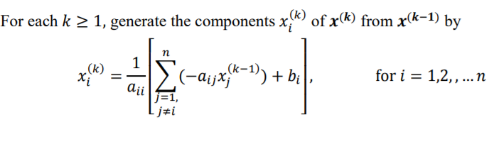
jacobi <- function(A,b){
n <- length(b); x0 <- numeric(n); x <- numeric(n)
for(k in 1:20){ #pocet iteraci, staci 10 (méně efektivní - nevyužívá již spočítané iterace,explicitní smyčky zpomalují výpočet)
for(i in 1:n){
x[i] <- (b[i]- sum(A[i,]*x0)+A[i,i]*x0[i]) /A[i,i]
}
#nepoužívá aktuální hodnoty z právě probíhající iterace – všechny výpočty v jedné iteraci vycházejí pouze z hodnot z předchozí iterace.
x0 = x #vypočítá novou aproximaci do x a přiřadí do x0
}
return(x)
}Třídiagonální matice (LU dekompozice)
tri_diagonalni_matice <- function(a,b,c,d){
n <- length(d)
u <- a
y <- d #Dopředná substituce Ly=d
for(i in 2:n){ #Řešení pomocí dekompozice na LU a pomocí předního a zpětného substitučního kroku
coef <- -b[i-1]/u[i-1]#coef se použ. k akt. diag. prvků u[i] a y[i]
u[i] <- a[i]+coef*c[i-1] #aby se vytvořila hor. troju. matice
y[i] <- d[i]+coef*y[i-1]
}
x <- y #numeric(n)
x[n] <- y[n]/u[n] #Zpětná substituce Ux=y
for (i in (n-1):1) { #postupuje se od posledního prvku x[n]
x[i] <- (y[i]-c[i]*x[i+1])/u[i]
}
return(x)
}n <- 10; A <- matrix(runif(n*n),nrow=n); b <- runif(n,-1,1) #matice a vektor naplním random čísly s hodnotami mezi -1 a 1 podle délky n
diag(A) <- diag(A)*10*n #Diagonální prvky jsou násobeny 10*n,aby byla matice diagonálně dominantní(nutná podmínka konvergence Gauss-Seidelovy metody)
solve(A,b); print(gaussseidel2(A,b)); print(jacobi(A,b)) # řešení aproximace [1] -0.003807707 -0.009414512 -0.003743561 -0.009243725 -0.016071647
[6] -0.004293074 0.005460860 0.012431492 -0.009936577 -0.008566560 [1] -0.003807707 -0.009414512 -0.003743561 -0.009243725 -0.016071647
[6] -0.004293074 0.005460860 0.012431492 -0.009936577 -0.008566560 [1] -0.003807707 -0.009414512 -0.003743561 -0.009243725 -0.016071647
[6] -0.004293074 0.005460860 0.012431492 -0.009936577 -0.008566560#a-hlavní prvky diagonály,b-prvky poddiag.,c-prvky naddiag.,d-vektor pravé strany rovnice
n <- 10; a <- runif(n); b <- runif(n-1); c <- runif(n-1); d <- runif(n) #naplním random čísly
print(tri_diagonalni_matice(a,b,c,d)) [1] -1.9706733 1.3285031 0.3108354 -1.1370372 2.1900115 -5.2343628
[7] 2.8230646 -1.2500030 0.8345394 2.0946695Interpolace
Lagrangeova interpolace
Lagrange <- function(t,x,y){ #počítáme bod t, kde chceme spočítat intepolaci, x jsou body dané na ose x, y jsou uzly na ose y (vektor)
n <- length(x); suma <- 0
for (i in 1:n) {
nasobic <- 1#jsou použity jako váhy pro příslušné základní polynomy
for(j in 1:n){
if(j!=i){ #pro j!= 0
nasobic <- nasobic*(t-x[j])/(x[i]-x[j]) #Lagrangeův základní polynom Li(t), která se skládá z násobků (t-xj)/(xi-xj), kde j se nerovná i.
}
}
suma <- suma+y[i]*nasobic #suma hodnot všech základních polynomů násobených odpovídající hodnotou y[i]
}
return(suma) #hodnota interpolovaneho polynomu v bodech t stupně n-1
}Vandermondova interpolace (výpočet koeficientů polynomu)
Vandermonde <- function(x,y){
n <- length(x); A <- matrix(1,nrow=n,ncol=n)
for(j in 2:n){ #pro kaž. bod(xi,yi) platí že hodnota P(xi) se musí=yi
A[,j] <- A[,j-1]*x #to vede k lin. soustavě rovnic a*c=y
} #c - vektor koeficientú, y - vektor hodnot
return(solve(A,y)) #vektor c koeficientů interp. polynomu stupně n-1
}Hornerovo schéma (vyhodnocení polynomu)
#pol. je obecně vyjádř. ve tvaru: P(x)=anx^n+an-1x^n-1+…+a1x+a0
Horner <- function(x,coef){ #vyhodnocení polynomu pomocí tvaru funkce: P(x)=(…((anx+an-1)x+an-2)*x+…+a1)x+a0, kde tento přístup minimalizuje počet násobení a sčítání (operací) při výpočtu hodnoty polynomu
n <- length(coef); res <- coef[n] #Výpočet začíná od nejvyššího koef.
for (i in (n-1):1) { #pro každý koef. od an-1 po a0 akt. res=res*x+ai
res <- res*x+coef[i] #se postupně přidává k dalším koeficientům tak, že každý mezivýsledek res násobíme x a přičítáme další koef.
}
return(res) #hodnota polynomů pro dané x
}# vhodné pouze pro hodnocení polynomuNewtonova metoda (výpočet koeficientů a hodnot newtonova interpolovaného polynomu v bodech)
NewtonPolCoef <- function(x,y){ #vektor bodů na ose x a y(mnoziny bodů)
n <- length(x); coef <- numeric(n) #vytvoření prázdného vektoru
coef[1] <- y[1] #první coef c1 a y1
if(n > 1){
for (i in 2:n) {
suma <- coef[1]; nasobic <- 1
for(j in 1:(i-1)){
nasobic <- nasobic*(x[i]-x[j])
suma <- suma + coef[j]*nasobic
} #metoda dělených rozdílů, koeficienty c[i] jsou počítány iterativně pomocí dělených rozdílů a předchozích výsledků.
coef[i] <- (y[i]-suma)/nasobic
} #c jsou koef. získané pomocí dělených rozdílů
}
return(coef) #Vektor koeficientů Newtnova polynomu
}
#pol. P(t)=c1+c2(t-x1)+c3(t-x1)(t-x2)+...+cn-1(t-x1)(t-x2)...(t-xn-1)
NewtonPolValue <- function(t,x,coef){#t-bod,kde hodnotíme polynom.x: uzly na ose x, coef: koeficienty pol. vypoc. funkcí NewtonPolCoef.
n <- length(coef); res <- coef[n] #Začíná od posledního koeficientu cn
for (i in (n-1):1) {
res <- res*(t-x[i])+coef[i]#Newtonův polynom je vyjádřen v rekurzivním tvaru s využitím základních polynomů P(t)
}
return(res) #hodnota polynomu v bodech t P(t)
}n <- 10; a <- 0; b <- 2*pi; x <- seq(a,b,length.out=n) #interval od a do b
y <- runif(n); y <- sin(x)#vytvoření y intervalu s náhodnými čísly a přidání sinusových hodnot
plot(x,y, col="red",ylim = c(-1,1)) #vykreslení bodů
t <- seq(a,b,by=0.01) #celá čára
lines(t, Lagrange(t,x,y),col="blue") #interpolace
lines(t,Horner(t, Vandermonde(x,y)),col="green")
lines(t,NewtonPolValue(t,x,NewtonPolCoef(x,y)),col="orange") #horizontální čáry v bodech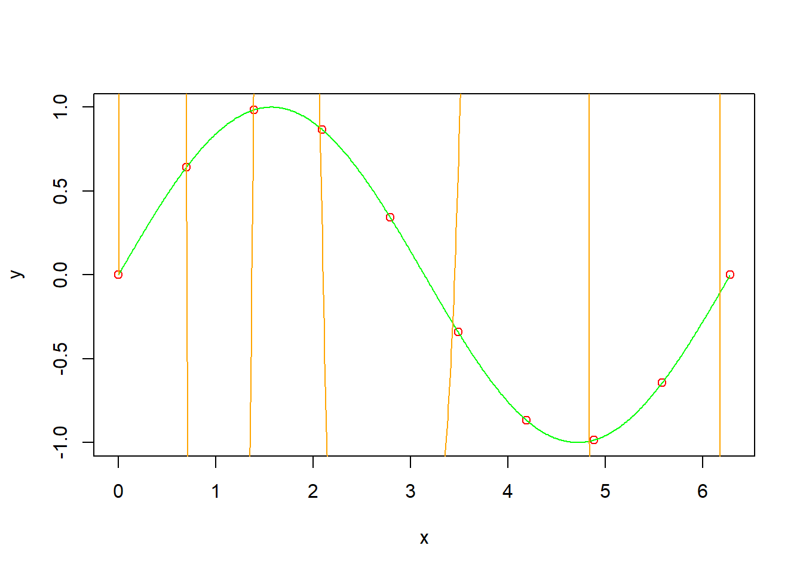
#print(Vandermonde(x,y)) #koeficienty polynomu získané pomocí Vandermondovy metodyNewtonova interpolace (stejné jako předchozí)
AddNewtonCoef <- function(x, y, a){ #výpočet koeficientu pro newtonovu interpolaci x(body na ose x),y(hodnota funkce v odpovídajích bodech x),a(dosavadní koeficienty Newtonova polynomu)
n <- length(x); scitani <- 0; nasobeni <- 1 #n<-lenghth(x) znázorňuje počet bodů. Funkce scitani akumuluje hodnotu koeficientů při výpočtu.Funkce násobení odpovídá součinu (xn-x1)(xn-x2)…(xn-xi-l)
for(i in 1:(n-1)){
scitani <- scitani + a[i]*nasobeni
nasobeni <- nasobeni*(x[n]-x[i]) #smyčka od i=1 do n-1 akumuluje hodnotu koeficientů
}
return((y-scitani)/nasobeni) #koeficient se vypočítá jako podíl rozdílu y-scitani a aktuálního násobení
}
NewtonPolynomial <- function(z, a, x){#z(bod, kde se polynom vyhodnocuje),a(koeficienty polynomu),x(body na nichž je polynom založen)
n <- length(a); res <- a[n] #funkce: res <- a[n]: výpočet začíná od posledního koeficientu
if(n > 1){
for(i in (n-1):1) res <- res*(z - x[i]) + a[i] #Smyčka prochází zpětné koeficienty a postupně přidává jejich příspěvek do výsledeku
}
return(res)
}Lagrangeova interpolace
#výpočet jednotlivých zákl. polynomů Lj(x) pro Lagrangeovu interpolaci
l <- function(xa, x, j){ #xa(bod, kde se polynom lj(x) vyhodnocuje),x(vektor uzlů x), j(index bodu, pro který se počítá základní polynom)
res <- 1 #Lj(x) je 1 v bodě xj a 0 v ostatních bodech
for(i in 1:length(x)){ #smyčka iteruje přes všechny body xi kromě bodu xj, pro každý součin i!=j se počítá (xa-x[i])/(x[j]-x[i])
if(i != j) res <- res*(xa-x[i])/(x[j]-x[i])
}
return(res) #hodnota zákl. polynomu Lj(xa)
}
#Lagrangeova interpolace,vyjadř. se jako lin. kombinace základních polynomů Lj(x)
Lagrange <- function(xa, x, y){ #xa(bod,kde se polynom vyhodnocuje),x (vektor uzlů x), y(vektor hodnot úzlů y)
res <- 0
#Smyčka iteruje přes všechny uzly a pro každý uzel se vyp. příspěvek yi*Lj(xa), výsledky se sčítají aby vzn. hodn. polynomu v bodě xa
for(i in 1:length(x)) res <- res+y[i]*l(xa, x, i)
return(res) #hodnota interpolovaného polynomu P(xa)
}n <- 10; x <- 1:n; y <- sin(x); plot(x, y)
a <- y[1]
for(i in 2:n) a[i] <- AddNewtonCoef(x[1:i], y[i], a) #vypočet koeficientů pro další bod
z <- seq(x[1], x[n], 0.01) #generuje mřížka hodnot x.
#Pro každý počet bodů se vykreslí odpovídající interpolace Newtonovým polynomem pomocí funkce lines
for(i in 2:n) lines(z, NewtonPolynomial(z, a[1:i], x[1:i]), col=i+1)
plot(x,y)
lines(z, Lagrange(z, x, y)) #interpolace pro všechny body pomocí lines.
lines(z, y[8]*l(z, x, 8), col='red') #červenou křivku odpovídajcí příspěvku osmého bodu
abline(h=0, col='blue') #vodorovnou modrou čáru y=0
Aproximace
Kvadratická aproximace
#aproximace funkcí pomocí metody nejmenších čtverců
# coef Vypočítá koeficienty a0,a1,a2 pro aproximaci funkce metodou nejmenších čtverců
coef <- function(x, y, phi){#phi-definuje kvadratické bázové funkce konstatní, lineránáí a kvadaratický člen
# phi je funkce pro polynom 2. stupně k aproximaci
M <- sapply(x, phi) #vandermondova matice
A <- M %*% t(M) #tranpozice matice M
b <- c(M %*% y) #výpočet vektorů hodnot
return(solve(A,b)) #vyřešení normálních rovnic
} #Používá maticový přístup a řešení soustavy normálních rovnic, což umožňuje aproximovat i data, která nejsou přesně polynomiální.phi <- function(x){ return(c(1,x,x*x)) }# a0+a1*x+a2*x^2 (Funkce phi pro polynom 2. stupně: [1, x, x^2])
phi2 <- function(x){ return(c(sin(x),sin(16*x))) } #definuje bázové funkce jako sinusové členy s různými frekvencemi
# Příklad 1: Aproximace sin(x) pomocí polynomu 2. stupně
x <- seq(0,2*pi,0.1); y <- sin(x)
plot(x,y) #zobrazí původní data (sin(x)) jako body.
# Výpočet koeficientů
a <- coef(x,y,phi)
xs <- seq(0,2*pi,0.001) #vyhodnocení polynomu v bodech xs
lines(xs, a %*% sapply(xs,phi),col="red") #přídá aproximovanou křivku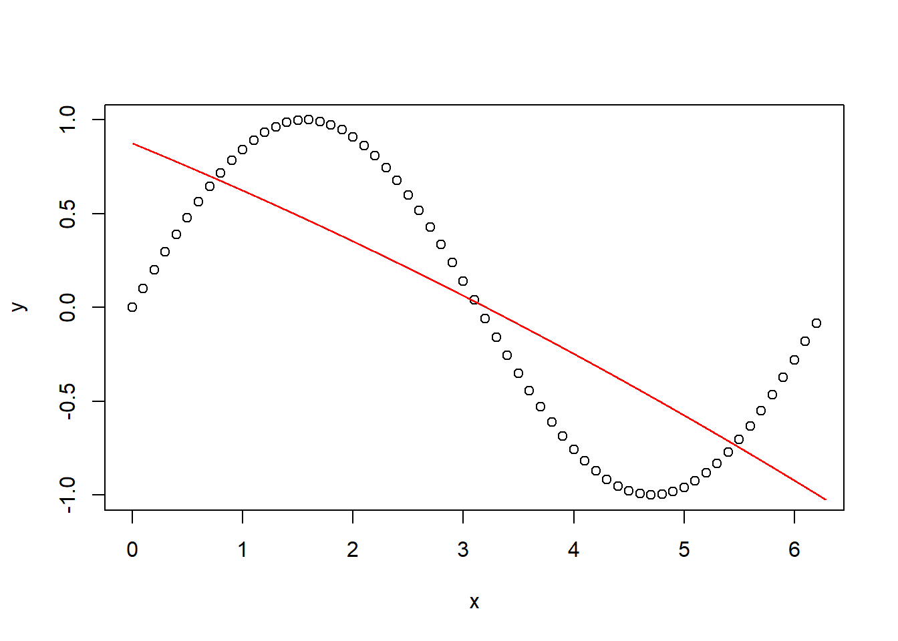
# Aproximace na jemnější mřížce
n <- 1000
x <- seq(0,2*pi,0.01); y <- sin(x)+0.2*sin(16*x)+ 0.01*sin(32*x) #obosahuje kombinaci sinusových funkcí se šumem
plot(x,y)
a <- coef(x,y,phi2) #obsahuje koeficienty odpovídající bázovým funkcím
xs <- seq(0,2*pi,0.0001)
lines(xs, a %*% sapply(xs,phi2),col="red")
x <- seq(0,2,0.01);
y <- 1/(x*x-0.2*x+0.01)+0.01*sin(100*x)#obsahuje hodnoty racionální funkce s přidaným šumem 1/y: invertuje funkci k usnadnění aproximace
plot(x,y)
a <- coef(x,y,phi)
lines(xs, a %*% sapply(xs,phi),col="red")#invertuje funkci kvůli usnadnění aproximace
LSA (least square approximation)
# LSA(implementuje metodu nejmenších čtverců pro nalezení koeficientů aproximačního polynomu, pro body (x,y) vyp. nejlepší možný aproximační polynom stupně n-1, kt. minimalizuje odchyylky mezi hodn. x a predik.h.
LSA <- function(x, y, n){ #x a y jevektor hodnot, n je stupeň polynomu
A <- matrix(0, n, n); b <- numeric(n) #vytvoření matice A a vektoru b
for(i in 1:n){
for(j in 1:n){
#A je matice součtů mocnin x
A[i,j] <- sum(x^{i+j-2})
}#b je vektor součtů součinů yx^i-1
b[i] <- sum(y*x^{i-1}) # součty součinů y*x^(i-1)
} #vyřeší se lin. soustava rovnic LS: A*c=b což
return(solve(A, b)) # vrátí vektor koeficientů c (aprox. polynomu)
}LSAef <- function(x, y, n){ #alternativní funkce k LSA s využitím matice mocnin nebo maticových operací (může využívat Vandermondovu matici)
X <- matrix(1, nrow=n, ncol=length(x)) #matice X, kde každý řádek odopovídá mocnině x nad k-1. Normální rovnice je (X * X nad T) * c=X*y
for(i in 2:n) X[i, ] <- X[i-1, ]*x # Generování mocnin x
return(c(solve(X%*%t(X), X%*%y))) #koeficienty aproximačního polynomu
}Horner <- function(x, a){ #mějme třeba polynom pro a:2x^3-6x^2+2x-1
#výpočet hodnoty v bodě x, a je vektor koeficientů an, an-1,...,a0
n <- length(a); res <- a[n] # Začíná od posledního koeficientu
for(i in (n-1):1){#Algoritmus umožňuje minimalizovat počet operací proti běžnému vyhodnocování polynomu
res <- res * x + a[i] #proch koef. iterací po zpátku
}
return(res) #hodnota polynomu P(x) v bodě x
}n <- 100; x <- runif(n, -1, 1)#100 náhodných bodů v intervalu od -1 do 1
y <- exp(x) # funkční hodnoty
plot(x, y)
m <- 6
coef <- LSA(x, y, m) # výpočet koeficientů pomocí LSA
#print(coef); coef <- LSAef(x, y, m) # alternativní výpočet koeficientů
#print(coef) #vektor koeficientů
plot(function(x) Horner(x, coef), add=TRUE, col='red', lw = 2, xlim = c(-1, 1)) #udělá čáru přes koeficienty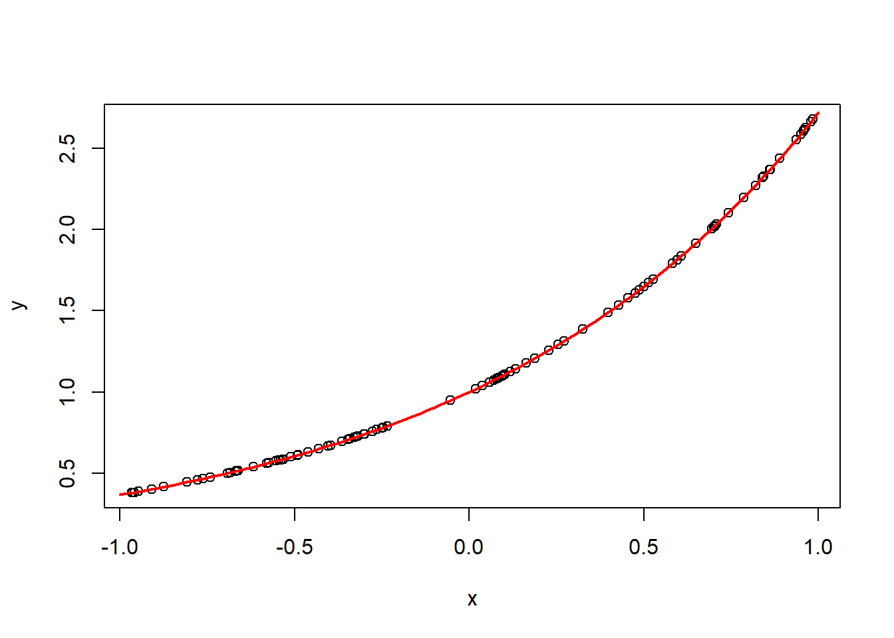
Aproximace exponenciální funkce Taylorovou řadou
ExpTaylor <- function(x,n=1){#aproximace funkce e^x pomocí n-členů Taylorovy řady
term <- rep(1,length(x)); res <- term #začínají hodnotou 1
if(n > 1){
for(i in 2:n){
#přidávají se jednotlivé členy Taylorovy řady x na k /k faktoriál
term <- term*x/(i-1)#uchovává aktuální člen Taylorovy řady
res <- res + term #uchovává součet všech členů.
}
}
return(res) #vrátí přibližnou hodnotu e^x pro každý bod x
} #funguje pro různé funkce v různých bodech a
a <- -3; b <- 3; x <- seq(a,b,0.001)
plot(exp, xlim=c(a,b),lwd=4) #exponenciální funkci e na x
# přidává aproximace pro n=1 až n=8 pomocí různých barev
for(i in 1:5){ lines(x,ExpTaylor(x,i),col=colors()[i+1],lwd=2) } # ExpTaylor je použita k vykreslení aproximace e na x pro různé stupně n 
Numerické derivace, integrace
PrvniDerA <- function(f,x, h){return((f(x+h)-f(x))/h)}#první derivace (jednostranná), dopředná diference k aproximaci první derivace
PrvniDerB <- function(f,x, h){return((f(x+h)-f(x-h))/(2*h))}#první derivace (centrální difference), k aproximaci první derivace (přesnější než dopředná)
DruhaDerB <- function(f,x, h){return((f(x+h)-2*f(x)-f(x-h))/(2*h))}#druhá derivace (pomocí centrální difference)
#vrací nám přibližnou hodnotu nějaký funkce nějakým bodě x s krokem hMidpoint Rule (num. derivace)
# Midpoint Rule (num. derivace, numerická metoda aproximace integrálu pomocí metody středního bodu)
MidPointRule <- function(f,a,b,n=1){#n - počet podintervalů
h <- (b-a)/n #délka každého subintervalu je h= b-a/n, Funkční hodnoty jsou počítány ve středech subintervalů
#Plocha pod křivkou v každém podintervalu je aproximována pomocí obdélníku o základně h a výšce f.
return(h*sum(f(h*(1:n)+a-h*0.5)))#aproximovaná hodnota integrálu
}
a <- 0; b <- pi; print(cos(a)-cos(b))[1] 2#for (i in 1:30) cat(i,'\n', MidPointRule(sin,a,b,2^i),'\n') #vypíše iterace (přibližně 2)Simpson’s rule (num. derivace)
SimpsonRule <- function(f,a,b,n=1){
#Kombinuje funkční hodnoty na krajních bodech,koeficienty 4x hodnoty ve stř bodech a 2x hodnoty mezi středy
h <- (b-a)/(2*n) #velikost subintervalu se sudým počtem(n)
hpul <- h/2
suma <- f(a)+f(b) #funkční hodnoty na krajních bodech
xs <- a+h*(1:n) + a - hpul
suma <- suma + 4*sum(f(xs))# liché hodnoty
if(n>1){
xl <- (xs + hpul)[-n]
suma <- suma + 2*sum(f(xs)) #sudé hodnoty
}
return(suma*h/6) #vynásobim konstantou h/6 pro normalizaci approx.
}
#for (i in 1:30) cat(i,'\n',SimpsonRule(sin,a,b,2^i),'\n')Metody pro řešení diferenciálních rovnic druhého řádu (s aproximací)
Eulerova metoda
# Eulerova metoda (přidá hodnotu derivace (určené funkcí f) k aktuálnímu vztahu), k aproximace řešení dif. rovnice 1. řádu
euler <- function(x,y,f,h){return(y+h*f(x,y))} Runge kutta (aproximaxe derivací)
RK <- function(x,y,f,h){ hhalf <- 0.5*h; return(x+h*f(x+hhalf,y+h*f(x+hhalf,y+hhalf*f(x,y)))) } #ve skutečnosti jde o eulerovu metodu
RK2 <- function(x, y , f, h){ #runge kutta 2. řádu, používá jeden mezikrok k lepší aproximaci derivace
hhalf <- 0.5*h
return(y+h*f(x+hhalf,y+h*f(x+hhalf,y+hhalf*f(x,y))))
}
RK4 <- function(x,y,f,h){ #4 mezikroky k dosažení vyšší přesnosti, má velmi malou chybu i při větších krocích. Bere totiž v úvahu. derivace na začátku, uprostřed a na konci intervalu.
hhalf <- 0.5*h
k1 <- f(x,y)
k2 <- f(x+hhalf,y+hhalf*k1)
k3 <- f(x+hhalf,y+hhalf*k2)
k4 <- f(x+h,y+h*k3)
return (y+((h/6)*(k1+2*(k2+k3)+k4)))
}
f<-function(x, y){ -2 * x * y }; x0 <- 0; y0 <- 1; h <- 0.1#dif rce. 1. ř.# Definice diferenciální rovnice pro oscilátor
f <- function(t,X){ return(c(X[2],-X[1]-0.1*X[2])) }#Rovnice: dx/dt = v, dv/dt = -x - 0.1v, X <- c(x[1],x[2]) <- c(x,v), pravá str. rovnice
#časový interval[0,100], rozdělen na 1000 kroků s krokovou velikostí h=0.1
tMAX <- 100; n <- 1000; h <- tMAX/n; t <- seq(0,tMAX,h)
n <- n+1; X <- matrix(0,nrow=n,ncol=2)#Matice x uchovává hodnoty polohy a rychlosti, začínjící na x(0)=100,v(0)=0
X[1,1] <- 100; X[1,2] <- 0 #rozmezí x
for(i in 2:n){ X[i,] <- euler(t,X[i-1,],f,h) } # Výpočet pomocí Eulerovy metody
plot(t,X[,1],col='red',type='l')
Xrk2 <- X
for(i in 2:n) Xrk2[i,] <- RK2(t, Xrk2[i-1,], f, h) #RK2
lines(t, Xrk2[,1], col='blue', type='l')
Xrk4 <- X
for(i in 2:n){ Xrk4[i,] <- RK4(t,Xrk4[i-1,],f,h) } #RK4
lines(t,Xrk4[,1],col='blue',type='l')
lines(t, 100*exp(-0.1*t/2)*cos(t), col='green', type='l')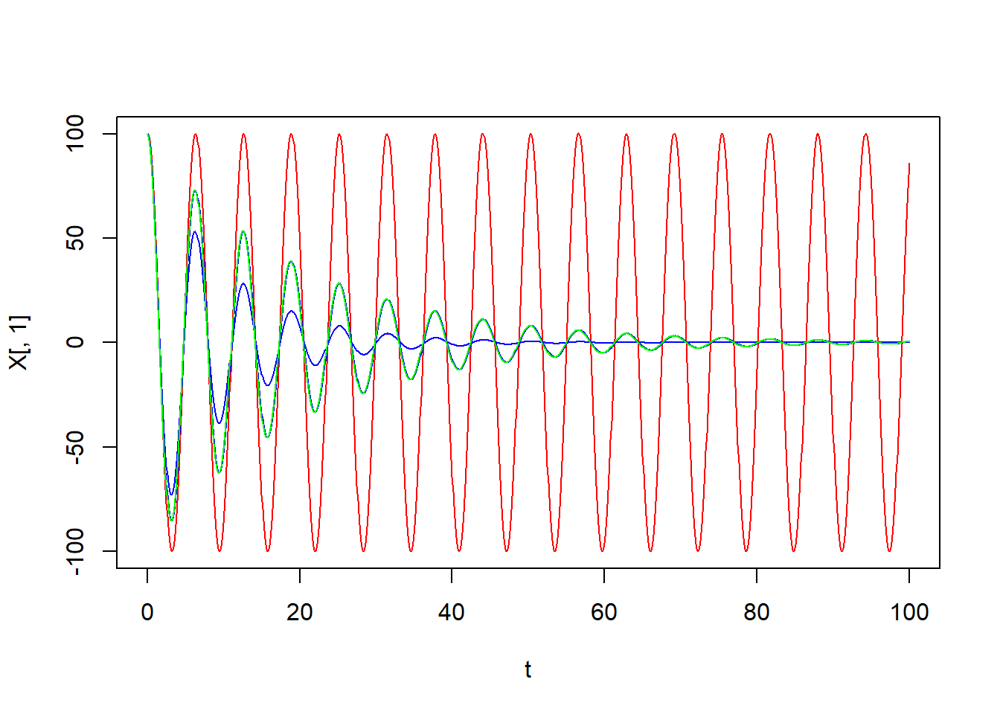
Eulerova metoda (aproximace nového stavu pomocí gradientu v daném bodě)
EulerStep <- function(f, x, y, h){ return(y+h*f(x,y)) }
#(Midpoint Method)Vylepšená metoda Eulerova kroku využívající predikci ve středu intervalu
EulerStepIIa <- function(f, x, y, h){
hpul <- h*0.5
return(y+h*f(x+hpul,EulerStep(f, x, y, hpul)))
}
#Kombinuje hodnotu derivace na začátku intervalu a na konci intervalu. Zase o něco vyšší přesnost, protože využ. více inf. o průběhu derivace.
EulerStepIIb <- function(f, x, y, h){
return(y+h*0.5*(f(x, y) + f(x, EulerStep(f, x, y, h))))
}
RK4 <- function(f, x, y, h){
hpul <- 0.5*h; k1 <- f(x, y); xshift <- x + hpul; k2 <- f(xshift, y + hpul*k1); k3 <- f(xshift, y + hpul*k2); k4 <- f(x+h, y + h*k3)
return(y+h*(k1+2*(k2+k3)+k4)/6)}#dvě diferenciální rovnice prvního řádu
f <- function(x, y){ return(-y) } #expoenciální pokles -y
fSchwingung <- function(x, y){ return(c(y[2], -y[1]-0.1*y[2])) } # harmonický oscilátor s tlumením
#pocet kroku, tMax, dt, n0-poc hodnota
N <- 3; tMax <- 2*log(2); dt <- tMax/N; t <- dt*(0:N) #casova sekvence
n0 <- 300; n <- t; n[1] <- n0
for(i in 1:N) n[i+1] <- EulerStep(f, t[i], n[i], dt)
plot(function(t) n0*exp(-t), xlim = c(0, tMax), col='red', lwd=2) #vykreslení funkce
points(t, n, col='blue') #bodů ve funkci (pro exp pokles)
#(všechno skoro stejné)
nIIa <- t; nIIa[1] <- n0
for(i in 1:N) nIIa[i+1] <- EulerStepIIa(f, t[i], nIIa[i], dt)
points(t, nIIa, col='green')
nIIb <- t; nIIb[1] <- n0
for(i in 1:N) nIIb[i+1] <- EulerStepIIb(f, t[i], nIIb[i], dt)
points(t, nIIb, col='cyan')
nRK4 <- t; nRK4[1] <- n0
for(i in 1:N) nRK4[i+1] <- RK4(f, t[i], nRK4[i], dt)
points(t, nRK4, col='violet') #je to přesně na čáře
#řešení s tlumenou oscilací se schwingung(n-pocet kroků,t-max.čas,x0-poč. hodnota polohy)
N <- 200; tMax <- 8*pi; dt <- tMax/N; t <- dt*(0:N); x0 <- 1
x <- matrix(0, nrow=N+1, ncol=2); x[1, 1] <- x0; x[1, 2] <- 0
for(i in 1:N) x[i+1,] <- EulerStep(fSchwingung, t[i], x[i, ], dt)
plot(t, x0*exp(-0.05*t)*cos(t), xlim = c(0, tMax), col='red', lwd=2, type='l') #vykreslení oscilace
points(t, x[,1], col='blue')
#postupně se přibližuje
xIIa <- matrix(0, nrow=N+1, ncol=2); xIIa[1, 1] <- x0; xIIa[1, 2] <- 0
for(i in 1:N) xIIa[i+1,] <- EulerStepIIa(fSchwingung, t[i], xIIa[i, ], dt)
points(t, xIIa[,1], col='green')
xIIb <- matrix(0, nrow=N+1, ncol=2); xIIb[1, 1] <- x0; xIIb[1, 2] <- 0
for(i in 1:N) xIIb[i+1,] <- EulerStepIIb(fSchwingung, t[i], xIIb[i, ], dt)
points(t, xIIb[,1], col='cyan')
xRK4 <- matrix(0, nrow=N+1, ncol=2); xRK4[1, 1] <- x0; xRK4[1, 2] <- 0
for(i in 1:N) xRK4[i+1,] <- RK4(fSchwingung, t[i], xRK4[i, ], dt)
points(t, xRK4[,1], col='violet')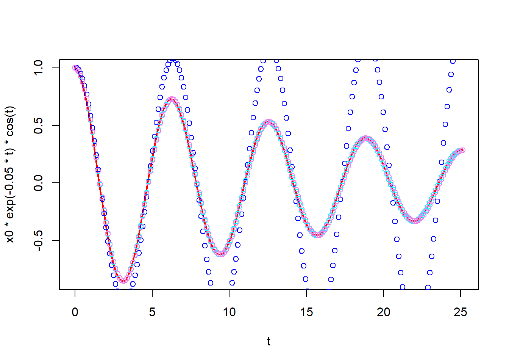
Integrace a aproximace funkce pomocí různých metod
Horner <- function(x,coef){
#výpočet polynomu zadaného koeficienty a pro danou hodnotu x
n <- length(coef); res <- coef[n]
for (i in (n-1):1) {
res <- res*x+coef[i]
}
return(res) #vrací hodnotu polynomu P(x) v bodě x
}
#výpočet hodnoty integrálu polynomu na intervalu (a,b) s použitím hornerova schématu a s přímou úpravou koeficientů pro integrační polynom
Anal_integ_pol <- function(coef,a,b){
n <- length(coef)
coef <- coef/(1:n) #Koeficienty jsou upraveny vydělením hodnotou 1,2,…,n odpovídající stupni
return(b*Horner(coef,b)-a*Horner(coef,a))
}Monte carlo
#Monte Carlo metoda, náhodné vybere n bodů xi z intervalu a,b pomocí runif, vyhodnotí funkčí hodnoty,spočítá jejich průměr a vynásobí délkou integrálu(b-a)
integ_stredni_hodnota <- function(f,a,b,N){ return (mean(f(runif(N,a,b)))*(b-a)) } #výpočet integrálu
print(integ_stredni_hodnota(exp,0,1,1000))[1] 1.713132#Symetrická verze metody střední hodnoty, která přidává symetrickou hodnotu funkce kolem středu intervalu, tím snižuje chybu, že využ. informaci z obou pol. intervalu
integ_stredni_hodnota_sym <- function(f,a,b,N){x <- runif(N,a,b); return (0.5*mean(f(x)+f(a+b-x))*(b-a)) }
#Geometrická metoda Monte Carlo,která náhodně generuje body(xi,yi) v obdélníku(a,b) x(0,h) a počítá podíl bodů pod křivkou f(x), kde yi<=f(xi)), přibližuje S plochy pod křivkou jako poměr bodů pod křivkou x obsah obdelníka
integ_geom = function(f,a,b,h,N){
x <- runif(N,a,b)
y <- runif(N,0,h)
return (mean(f(runif(N,a,b)))*(b-a))
} #využívá se například u vícerozměrných integrálů nebo stochastických simulacíGausova kvadratura (aproximace integrálu)
gauss_g_2 <- function(f,a,b){ #dvoudobá gaussova kvadratura
x1 <- 1/sqrt(3); x2 <- -x1 #používá dvě hodnoty na základě kořenů Lagrangeových polynomů druhého stupně(+-1/odmocnina ze 3),každý bod dostává stejnou váhu x2=x1=1
x <- c(x1,x2) #převádí na reálný interval [a,b]
sklon <- 0.5*(b-a)
return(sum(f(x*sklon+0.5*(a+b)))*sklon) #přesná pro pol. do stupně 3
}
gauss_q_3 <- function(f,a,b){ #tříbodová gaussova kvadratura
x1 <- 1/sqrt(0.6) #na základě kořenů Legenderovýcg polynomů třetího stupně 0 a +-(1/odmocnina z 0,6).
x <- c(x1,-x1,0)
sklon <- 0.5*(b-a)
y <- f(x*sklon+0.5*(a+b))
res <- 5/9*(y[1]+y[2])+8/9*y[3]#váhové koeficienty (w1=w2=5/9 a w3=8/9) pro hodnoty v bodech
return(res*sklon) # přesná pro polynomy do stupně 5
}#monte carlo (počet integrací N)
N <- 1000; res <- replicate(1000,integ_stredni_hodnota(exp,0,1,N))
cat(mean(res),"+-", sd(res)) # průměrný výsledek(mean) + chyba(sd)1.718841 +- 0.01547941N <- 4000; res <- replicate(4000,integ_stredni_hodnota(exp,0,1,N))
cat(mean(res),"+-",sd(res))1.718432 +- 0.007724517N <- 1000; res <- replicate(1000,integ_stredni_hodnota_sym(exp,0,1,N))
cat(mean(res),"+-", sd(res))1.718317 +- 0.00198816N <- 4000; res <- replicate(4000,integ_stredni_hodnota_sym(exp,0,1,N))
cat(mean(res),"+-",sd(res))1.718268 +- 0.0009791702N <- 1000; res <- replicate(1000,integ_geom(exp,0,1,3,N))
cat(mean(res),"+-", sd(res))1.717798 +- 0.0156313N <- 4000; res <- replicate(1000,integ_geom(exp,0,1,3,N))
cat(mean(res),"+-", sd(res))1.717875 +- 0.007800757#testování
print(gauss_g_2(exp,0,1)); print(gauss_q_3(exp,0,1)); print(exp(1)-1) #exponenciální funkce od 0 do 1 (porovnání přesnosti)[1] 1.717896[1] 1.846264[1] 1.718282print(gauss_g_2(function(x) 2*x^3+7*x^2-5*x+3, 5, 6)) # integrate 2*x^3+7*x^2-5*x+3 from 5 to 6[1] 523.3333N <- 15; coef <- runif(N); print(gauss_q_3(function(x) Horner(coef,x),5,6)) #integrace polynomu pomocí tříb. gauss k. s náhodnými koeficienty k přibližné integraci pol. v intervalu [5,6], horner vyhodnotí hodnotu polynomu v bodě x[1] 7.757592Anal_integ_pol(c(3,-5,7,2),5,6) #vypočítá intergál polynomu v intervalu [5,6]numeric(0)Integrace polynomu
Horner <- function(coef, x){ #Hornerovo schéma pro výpočet polynomu Vstupy: coef(koeficienty polynomu),x(bod, ve kterém se polynom vyhodnocuje)
n <- length(coef); res <- coef[n]
for(i in (n-1):1){res <- res*x+coef[i]}
return(res)
}
#integrace polynomu v intervalu (a,b), Coef(koeficienty polynomu), pomocí primitivní funkce
IntegratePolynom <- function(coef, a, b){
n <- length(coef)
coef <- coef/1:n #najdeme primitivní funkci polynomu, coef se počítá pomocí Horner schématu
x <- c(a, b)
res <- coef[n]
for(i in (n-1):1){res <- res*x+coef[i]}
res <- res*x
return(res[2]-res[1]) #hodnota integrálu polynomu, výpočet rozdílu I=F(b)-F(a)
}
#Monte carlo um integ. pomocí geom. metody (f(funkce k integraci),body a,b(meze intervalu),h(horní hranice-maximální hodnota funkce),n(počet náhodných bodů) )
GeomMethod <- function(f, a, b, h, n){
x <- runif(n, a, b) #Generují se náhodné body a porovnává se, zda leží pod grafem funkce. Poměr bodů pod grafem k celkovému počtu bodů odhaduje integrál
y <- runif(n, 0, h)
return(h*(b-a)*sum(y < f(x))/n)
}
#num. integ. Monte Carlo pomocí průměru hodnot, f(funkce k integraci), body a,b(meze intervalu), n(počet náhodných bodů)
AveMethod <- function(f, a, b, n){return((b-a)*mean(f(runif(n, a, b))))} # Generují se náhodné body a počítá se průměr hodnot funkce v těchto bodech. Tento průměr se násobí délkou intervalu
#Gaussova kvadratura druhého, třetího a čtvrtého řádu
Gauss2 <- function(f, a, b){
x <- 1/sqrt(3) #Hodnoty a váhy Gaussovy kvadratury se předem nastaví. Integrál se vypočítá jako vážený součet hodnot funkce v určených bodech
slope <- (b-a)/2
intercept <- (a+b)/2
return(slope*sum(f(slope*c(x, -x)+intercept)))
}
Gauss3 <- function(f, a, b){
x <- sqrt(0.6)
x <- c(-x, 0, x)
w <- c(5, 8, 5)/9
slope <- (b-a)/2
intercept <- (a+b)/2
return(slope*sum(w*f(slope*x+intercept)))
}
Gauss4 <- function(f, a, b){
#implementuje gauss k. na 4 body na intervalu [a,b],což znamená že přesně integruje polynomy až 7.stupně
x1 <- sqrt(3/7-sqrt(6/5)*2/7) #uzly které jsou kořeny L. polynomu P4(x)
x2 <- sqrt(3/7+sqrt(6/5)*2/7)
x <- c(x1, -x1, x2, -x2) #čísla se uloží do vektoru
w1 <- (18+sqrt(30))/36 #odpovídající váhy w1 a w2
w2 <- (18-sqrt(30))/36
w <- c(w1, w1, w2, w2) #do vektoru jsou váhy přizařeny odpovídajícím uzlům
slope <- (b-a)/2 #transformace integrálu, měřítko integrálu
intercept <- (a+b)/2 #posunutí ke středu intervalu
return(slope*sum(w*f(slope*x+intercept))) #spočítá se součet funkčních hodnot
} #vrátí se numerická aproximace integrálua <- 2; b <- 7; coef <- runif(6) #naplním koeficient náhodnými čísly
IntegratePolynom(coef, a, b)[1] 4580.603Gauss2(function(x) Horner(coef, x), a , b); Gauss3(function(x) Horner(coef, x), a , b); Gauss4(function(x) Horner(coef, x), a , b)[1] 4533.783[1] 4580.603[1] 4580.603exp(1)-exp(0); Gauss2(exp, 0 , 1); Gauss3(exp, 0 , 1); Gauss4(exp, 0 , 1) #výpočet exponenciální funkce[1] 1.718282[1] 1.717896[1] 1.718281[1] 1.718282Hledání kořenu funkce (rovnice)
Newtonovy metody
# new. metoda, iterativně hledá kořen funkce tj.hodnotu x^* pro kt. platí f(x^*)=0 pomocí vztahu taylorovy aproximace funkce: xn+1=xn-f(xn)/f’(xn)
NewtonRoot <- function(f,fd,xstart,acc=0.000000001){
x <- xstart; citac <- 0 #začneme odhadem x0
repeat{ citac <- citac+1 #iterativně vyp. nové odhady pomocí Newtonova vzorce
dx <- f(x)/fd(x) #derivace x
x <- x-dx #x <- x-f(x)/fd(x)
if(abs(dx)<acc){ #končíme pokud je dx<než přesnost acc
print(citac); #výpis počtu interací
return(x)} #vrací nalezený kořen
} #metoda se může zacyklit nebo konvergovat pomalu, vhodne pro analytickou der.
}
# Newtonovy metoda s dopřednou diferencí f’(x), kde h je malá hodnota
NewtonRootVarB <- function(f,xstart,acc=0.000000001){
x <- xstart; h<-acc; citac <- 0
repeat{ citac <- citac+1
dx <- h*f(x)/(f(x+h)-f(x)) #získáme upravený vzorec pro Newtonovu iteraci
x <- x-dx #x <- x-f(x)/fd(x)
if(abs(dx)<acc){ print(citac); return(x)}
} #může být nepřesná pro malé hodnoty h a má pomalejší konvergenci
}
#varianta s kvadratickou aproximací derivace: dx=F(x)2/f(x+f(x))-f(x)
NewtonRootVarC <- function(f,xstart,acc=0.000000001){
x <- xstart; citac <- 0
repeat{ citac <- citac+1
y <- f(x)
dx <- y*y/(f(x+y)-y)
x <- x-dx #x <- x-f(x)/fd(x)
if(abs(dx)<acc){ print(citac); return(x)}
} #funguje lépe když je f(x) těžké spočítat, ale pomalejší konvergence
}
#Používá drouhou derivaci f’‘(x) k vylepšení iterace pomocí vzorce:
# dx=(2f(x)f’(x))/(2(f’(x))^2-f(x)f’’(X))
NewtonRootVarD <- function(f,fd,fdd,xstart,acc=0.000000001){
x <- xstart; citac <- 0
repeat{ citac <- citac+1
y <- f(x); yd <- fd(x); ydd <- fdd(x)
dx <- 2*y*yd/(2*yd*yd-y*fdd(x))
x <- x-dx #x <- x-f(x)/fd(x)
if(abs(dx)<acc){ print(citac); return(x)}
} #rychlejší konvergence, méně iterací, ale potřebujeme druhou derivaci
}
#zrychlená verze Newtonovy metody pro hledání kořenů funkcí, použ. druhou derivaci, výpočet druhé odmocniny čísla(a) pomocí Halleyho iterace (Xn+1=xn-(2f(x)f’(x))/(2(f’(x))^2-f(x)f’’(X))
HalleySquareRoot <- function(a,acc=0.000000001){
x <- a; citac <- 0 #hledáme x aby platilo x^2=a, můžeme přepsat jako hled. kořene
repeat{ citac <- citac+1
xx <- x*x #využívá druhou derivaci a používá vylepšený vzorec
dx <- (xx-a)*2*x/(3*xx+a) #halleyho korekce
x <- x-dx #x <- x-f(x)/fd(x), aktualizace odhadu
if(abs(dx)<acc){ print(citac); return(x)}
}
}Newtonova metoda využívající hornerovo schéma
#využívá Newtonovy metodu pro pro hledání kořenů s Hornerovým schématem k efektivnímu výpočtu hodnoty polynomu a jeho derivace v bodě
NewtonHorner <- function(a,xstart,acc=0.000000001){ #acc-požadovaná přesnost
#n-stupeň polynomu(počet.koef),xstart-počáteční odhad kořene,citac-pocita iterace
n <- length(a); x <- xstart; citac <- 0
repeat{
citac <- citac + 1
y <- a[n] #inicializace P(x) s posledním koeficientem
yd <- y #začátek výpočtu P'(x)
for(i in (n-1):2){ #procházíme koeficientyy polynomu
y <- y*x+a[i] #přepíše polynom na iterativní formu, hodnota pol. P(x) v b. x
yd <- yd*x+y #hodnota derivace P'(x) v bodě x
}
y <- y*x+a[1]
dx <- y/yd #Newtonův krok: xn+1=xn-P(x)/P'(x)
x <- x-dx
# cat(citac, ": ", x, "\n")
if(abs(dx) < acc) { print(citac); return(x) }
}
} #funguje jen na polynomy# funkce f(funkce, jejíž kořeny hledáme), fd(první derivace) funkce f), fdd(druhá derivace)
f <- function(x){return(x*x*x-cos(x))}; fd <- function(x){return(3*x*x+sin(x))}
f <- function(x){return(x*x-2)}; fd <- function(x){return(2*x)}; fdd <- function(x){return(2)}
options(digits=20) #nastavení vypisování čísel na 20 des. míst
sqrt(2)[1] 1.4142135623730951455NewtonRoot(f,fd,0.5,10^(-7))[1] 6[1] 1.4142135623730951455NewtonRoot(f,fd,0.5,10^(-15))[1] 7[1] 1.4142135623730949234NewtonRootVarB(f,0.5,10^(-7))[1] 6[1] 1.4142135623730949234NewtonRootVarC(f,0.5,10^(-7))[1] 6[1] -1.4142135623730949234NewtonRootVarD(f,fd,fdd,0.5,10^(-7))[1] 4[1] 1.4142135623730951455a <- 150; HalleySquareRoot(a) #druha odmocnina ze 150[1] 6[1] 12.247448713915890295NewtonHorner(c(-2,0,1),2) #vypocet korene polynonu x2-2 s počátečním odhadem x0=2[1] 5[1] 1.4142135623730951455Chebyshev polynoms
#funkce pro generování a výpočet koeficintů Čebyševových polynomů
ChebyshevCoef <- function(n){ # n(počet Čebyševových polynomů, které se mají vygenerovat)
#vytvoří se prázdné vektory a0 a a1. Pro první a druhý polynom jsou nastaveny specicické hodnoty (T0(x) = 1 a T1(x) =x)
a0 <- numeric(n); a0[1] <- 1 #první čeb. polynom T0(x) = 1
if(n==1) return(a0) #pokud n=1 vrátíme koeficienty polynomu T0(x)=1
a1 <- numeric(n); a1[2] <- 1 #druhý čeb. polynom T1(x) = x
if(n==2) return(a1) #pokud n=2 vrátíme koeficienty T1(x)=x
for(i in 3:n){ #uchováváme 2 poslední polynomy Tn-2(x) a Tn-1(x)
a <- 2*c(0, a1[-n])-a0 #použítím rek. rci.: Tn(x)=2xTn-1(x)-Tn-2(x)
a0 <- a1 #posuneme polynomy
a1 <- a
}
return(a) #vrátíme koeficienty posl. polynomu T_n(x)
} #Newtonova metoda (hledání kořenů funkce)
#iterativní metoda hledání kořene funkce, f(funkce, pro kterou hledáme kořen), fd(derivace funkce f), x0(počáteční odhad kořene),tol(tolerance chyby, při které algoritmus skončí)
Newton <- function(f, fd, x0, tol=0.0000001){ #s první i druhou derivací
x <- x0 #za x0 si dosadíme odhad
repeat{
dx <- f(x)/fd(x) #dx=f(x)/fd(x)
if(abs(dx) < tol) return(x)
x <- x - dx
} #vrací kořen
}
#Newtonova metoda na polynomu pomocí Hornerova schématu
NewtonHorner <- function(a, x0, tol=0.0000001){ #a(koeficienty polynomu), x0(počáteční odhad kořene), tol(tolerance chyby)
#Funkce volá Horner pro výpočet hodnoty polynomu a jeho derivace v bodě x. Iterace probíhá podobně jako v Newton
x <- x0
repeat{
res <- Horner(a, x)
dx <- res[1]/res[2]
if(abs(dx) < tol) return(x)
x <- x - dx
} #vrací nalezený kořen
}
# Horner pro efektivní výpočet polynomu a jeho derivace v daném bodě x pomocí redukce počtu operací, dobře funguje na velké polynomy
Horner <- function(a, x){ #a(Koeficienty polynomu)
n <- length(a); y <- a[n]
if(n > 1){
yd <- y #inicializace hodnoty derivace
if(n > 2){
for(i in (n-1):2){
y <- y*x+a[i] #iterativní výpočet hodn. polynomu
yd <- yd*x+y #iterativní výpočet derivace
}
}
y <- y*x+a[1] #poslední iterace pro hodnotu polynomu
return(c(y, yd)) #vrátí hodnotu polynomu a derivace
}#iteruje přes koeficienty a efektivně spočítá hodnotu polynomu a derivace
return(c(y, 0)) #pokud je polynom konstantní derivace je 0
}
#Alternativa k Horner, která počítá hodnotu polynomu a jeho derivace přímo pomocí mocnin x. Výpočet je méně efektivní, prot. kaž. iterace znovu poč. mocniny
PolX <- function(a, x){
n <- length(a); y <- 0; yd <- 0 #počet koef, hodn. polynomu, hodn. derivace
for(i in 1:n){
y <- y + a[i]*x^(i-1) #přímý výpočet polynomů
yd <- yd + (i-1)*a[i]*x^(i-2) #přímý výpočet derivace
}
return(c(y,yd)) #Vrátí hodnotu polynomu a jeho derivace
} #pro velké polynomy výrazně pomalejší, nevyužívá rekurentní vztahyn <- 3; x <- 2; a <- runif(n) #gen. náh koeficientů
Horner(a, x); PolX(a, x) #výpočet hodnoty polynomu a derivace v daném bodě[1] 2.5368725557345896959 1.4279896751977503300[1] 2.5368725557345896959 1.4279896751977503300x <- seq(0,1,0.0001) #porovnání výsledků funkcí Horner a Polx grafy
plot(x, cos(x), ylim=c(0,1), type='l', col='red')#porovnává funkci cos(x) a diagonálu y=x
lines(x, x, col='green')
#výpočet bodu průsečíku
inters <- Newton(f = function(x) cos(x)-x, fd = function(x) -sin(x)-1, 0, tol=0.0000001)
points(inters, cos(inters), col="blue", cex=2)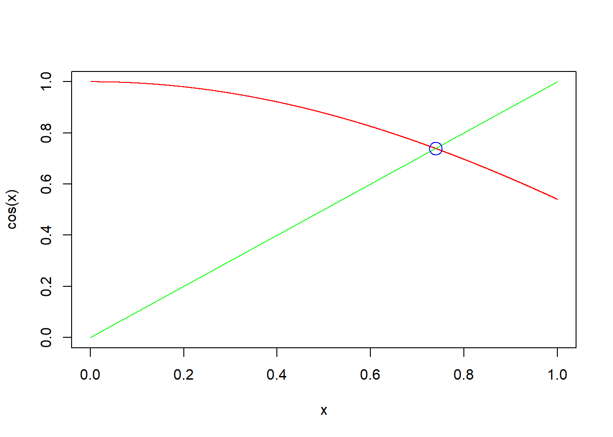
NewtonHorner(c(-2, 0, 1), 2) #výpočet korene polynomu s odhadem[1] 1.4142135623746898698x <- seq(-1,1,0.0001)
#Čebyševovy polynomy
plot(x, sapply(x, function(x) Horner(ChebyshevCoef(1), x)[1]), ylim=c(-1,1), type='l', col='black') #čára
#vykreslení sincos funkcí
for(i in 2:5) lines(x, sapply(x, function(x) Horner(ChebyshevCoef(i), x)[1]), ylim=c(-1,1), type='l', col=i+1)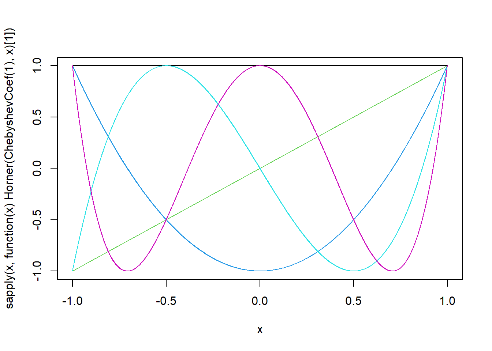
Bisekce (hledání kořene funkce)
#hledání kořene funkce f(x) v daném intervalu [a,b]
bisekce <- function(f, a, b){#f(funkce, jejiž kořen hledáme)
#funguje na principu opakovaného(iterativního) půlení intervalu, dokud nenajdeme dostatečně přesný přibližný kořen
fa <- f(a); fb <- f(b) #vypočítáme hodnotu pro začátek f(a) a konec f(b) int.
if(fa*fb < 0){ #ověří se zda interval obsahuje kořen (f(a)* f(b) < 0 tj. hodnoty musí mít opačné znaménko, aby metoda fungovala, že existuje mezi nimi kořen.)
repeat{
c <- (a+b)/2 #najdem střed intervalu
if(c == a || c == b) return(c) #pokud se interval už nemění,tak vrátíme kořen
fc <- f(c)#vypočítáme hodnotu středu f(c), pokud je blízko 0 našli jsme kořen
if(fa*fc < 0) { #pokud f(a)(první interval) a f(c)(střed) mají opačné znaménko, kořen je v (a,c)
b <- c
fb <- fc
}else{ #jinak je kořen v (c,b)
a <- c
fa <- fc
}
}
} #hodí se například, když chci jistotu, že kořen existuje
else{ stop("Spatne vstupni zadani"); return(FALSE) } #Pokud f(a) * f(b) >= 0, tak interval neobsahuje kořen
}#je robustní a jednoduchá,ale konverguje pomalu,vždy najde kořen(pokud podmínky),použ. se jako zákl. metoda,ale pro rychlejší výsledky je např. Newtonova metoda
print(bisekce(function(x) x*x-2, 0, 2)) #Funkce hledá kořen rovnice x**2 - 2 = 0 na intervalu (0,2), což je odmocnina ze 2[1] 1.4142135623730949234Prostá iterace funkcí (fixpointová metoda)
g <- function(x){return(sqrt(x+10)/x)} #pro Číselné metody
g2 <- function(x){return(0.5*(x+2/x))} #fce.(metoda Heronova vzorce pro odmocninu)
g3 <- function(x){return(2*log(x+2))} #fce. g(x) = 2*ln(x+2), která se iterativně přibližuje k pevnému bodu
#hledání pevných bodů funkcí g(x), hledáme hodnotu x, kt. se nemění
fixpoint1 <- function(g, x){
for(i in 1:10){ y <- g(x) #iterace vypočítá novou hodnotu y=g(x), zobrazí vizualizaci procesu (zelené segnemty v grafu)
segments(x,x,x,y,col="green") #vertikální čára
segments(x,y,y,y,col="green") #horizontální čára
x <- y; #print(x)
}#proces opakujeme dokud xn nepřestane výrazně měnit hodnotu(nenalezneme pev.bod)
}
fixpoint2 <- function(g, n){
n <- 40; x <- numeric(n); x[1] <- xstart #zvolíme počáteční bod x0
for(i in 2:n){ # Vykreslení posloupnosti iterací
x[i] <- g(x[i-1]) #iterativně vypočítáme posloupnost xn+1=g(xn)
segments(x0=x[i-1], x1=x[i-1], y0 = x[i-1], y1 = x[i], col='lightgreen')
segments(x0=x[i-1], x1=x[i], y0 = x[i], y1 = x[i], col='lightgreen')
#print(x[i])
}
}
xstart <- 5; plot(g, xlim=c(0, xstart), ylim=c(0, xstart), col='blue')
abline(a=0, b=1, col='red') #a + b * x
fixpoint2(g,n=10) #pomocí funkce g(x), iterační proces se vykreslí pomocí zelených segmentů, které sigualizují skákání hodnot mezi funkcí g(x) a diagonálou x=y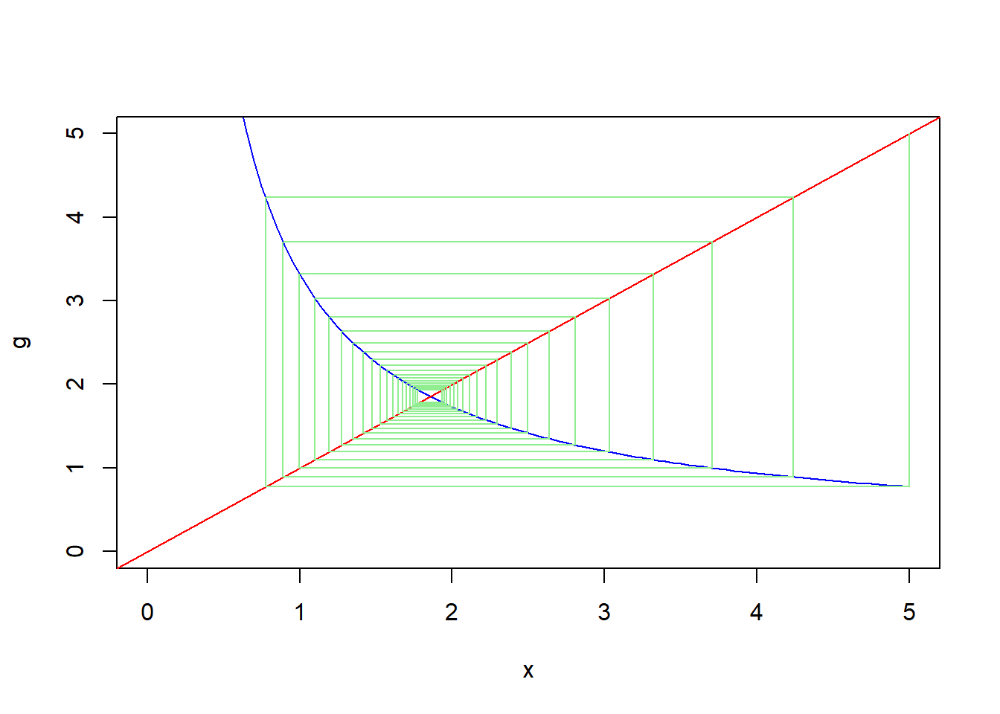
#př.1,funkce g2(x) heronovy metody(newtonovy iterace) pro výpočet odmocniny
x <- seq(0,3,0.01); plot(x,g2(x),ylim=c(0,4),type='l',col='blue') #graf funkce g(x)
abline(a=0,b=1,col='red') #přímka y=x (diagonála)
x=0.5
fixpoint1(g2,x)
fixpoint2(g2,n=40)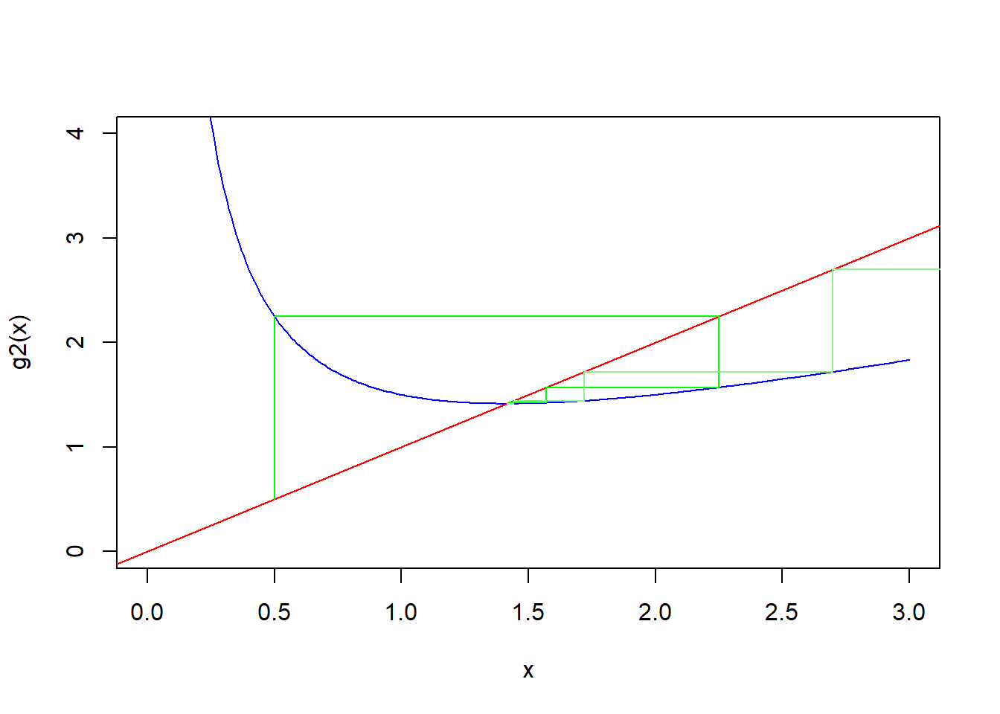
#př. 2, iterační proces s funkcí cos(x), iterace se snaží najít pevný bod, který konverguje ke kořenu rovnice cos(x) = x, je pro dynamické systémy
plot(cos,ylim=c(0,pi/2),col="blue"); abline(a=0,b=1,col='red') #vykreslí graf cos(x) a diagonálu y=x, iterativně hledá pevný bod, kde cos(x)=x
x <- 0.1; for(i in 1:10){ y <- cos(x); segments(x,x,x,y,col="green"); segments(x,y,y,y,col="green"); x <- y; print(x) }
[1] 0.99500416527802582056
[1] 0.54449939582778839053
[1] 0.85538670587936049827
[1] 0.65592666367047980369
[1] 0.79248310194480942048
[1] 0.70207926799067021939
[1] 0.76350103369188537794
[1] 0.72241963623897320623
[1] 0.75020805887529062872
[1] 0.73154703204422399931#př. 3, log. fce. g(x) = 2*ln(x+2), která se iterativně přibližuje k pevnému bodu, použití v některých dif. rovnicích a mod. reálných procesů ve fyzice
x <- seq(0,10,0.01); plot(x,g3(x),ylim=c(0,4),type='l',col="blue"); abline(a=0,b=1,col='red')#Iterativná proces vizualizuje přibližení k pevnému bodu.
x <- 0.1; for(i in 1:10){ y <- g3(x); segments(x,x,x,y,col="green"); segments(x,y,y,y,col="green"); x <- y; print(x) }
[1] 1.4838746894587546699
[1] 2.4962901818181424396
[1] 3.0065053054559367496
[1] 3.2214762557574374569
[1] 3.3055603390567576128
[1] 3.3375107823848684241
[1] 3.3495187973432947182
[1] 3.3540132248817182692
[1] 3.3556928303776385469
[1] 3.3563201512400500093Iterace pro řeš. dif. rovnic
#př. 4 pro řeš dif rovnic
f <- function(x, y){return((1+y*y)/(x*y*(1+x*x)))} #dif. rce. ve tvaru dy/dx s počáteční podmínkou y(x0)=y0
g <- function(y1){return(y0+hpul*(f(x1,y1)+f(x0,y0)))}#heunova korekce funkce g(y1), používá průměr. hodnotu der. v bodech(x0,y0)a(x1,y1), slouží ke korekci derivované hodnoty y1 po první aproximaci
step <- function(f, h, x0, y0){ #predikce pomocí eulerovy metody
hpul <- 0.5*h #poloviční krok pro korekci
x1 <- x0+h #posun na další bod
y1 <- y0+h*f(x0,y0) #Predikce (Eulerova metoda)
#iterativní korekce pomocí průměrné derivace, opakuje se 10x
for(i in 1:10) y1 <- y0+hpul*(f(x1,y1)+f(x0,y0))
return(y1)
}
#Hlavní smyčka–numerické řešení ODR, x je diskretizace intervalu
h <- 0.1; x <- seq(1, 2, h); n <- length(x); y <- numeric(n); y[1] <- 1 #poč.podmn.
#postupně poč. hodnoty y pro všechny x
for(i in 2:n) y[i] <- step(f, h, x[i-1], y[i-1])
#grafické znázornění-(pointy)numericky vypočtené hodnoty pomocí derivace a (lines) analytické řešení rovnice
plot(x, y, col = 'blue'); lines(x, sqrt((3*x*x-1)/(1+x*x)), col='red')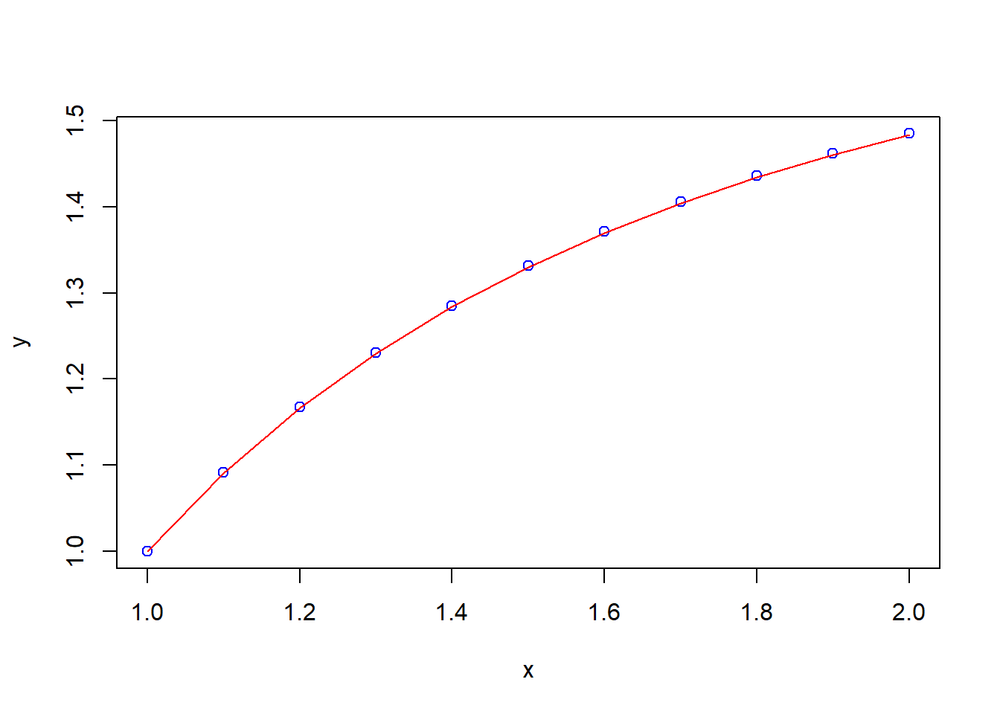
SIR a LV model
f <- function(x,beta,nu){ #SIR model (simulace šíření infekce v populaci)
#dS = -betaSI(počet náchylných k infekci), DI= BetaSI-vI(změna počtu infikovaných), dR = vI(přírůstek uzdravených)
dS <- -beta*x[1]*x[2]
dI <- beta*x[1]*x[2]-nu*x[2]
dR <- nu*x[2]
return(c(dS,dI,dR))
}
#explicitní metoda (Eulerovu metoda a postupná korekce) pro výpočet dalšího kroku
g <- function(h,f,y0,beta,nu){
y1 <- y0+h*f(y0,beta,nu)
y1 <- y0+0.5*h*(f(y0,beta,nu)+f(y1,beta,nu))
y1 <- y0+0.5*h*(f(y0,beta,nu)+f(y1,beta,nu))
y1 <- y0+0.5*h*(f(y0,beta,nu)+f(y1,beta,nu))
y1 <- y0+0.5*h*(f(y0,beta,nu)+f(y1,beta,nu))
return(y1)
}
nrow <- 3000; ncol<-3; SIR <- matrix(0,nrow,ncol); SIR[1,] <- c(999,1,0)#Inicializace populace (S=999.I=1, R=0)
beta <- 0.05; nu <- 0.5; h <- 0.001
for(i in 2:nrow) SIR[i,] <- g(h,f,SIR[i-1,],beta,nu) #iteruje 5000 kroků a aktualizuje počty Grafy
cas <- 1:nrow
plot(cas,SIR[,1],ylim=c(0,1000),type='l',col="red")
lines(cas,SIR[,2],col="blue")
lines(cas,SIR[,3],col="green")
legend("topright", legend=c("S(náchylní)", "I(infikovaní)", "R(uzdravení)"),col = c("red", "blue", "green"), lty = 1)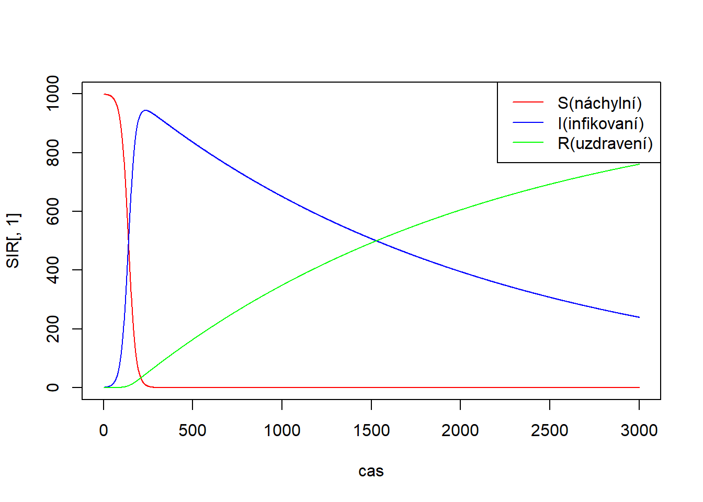
#lotka volterra model(interakce mezi predátory a kořistí),dx/dt=x(r-ay): změna populace kořsti dy/dt=y(-s+bx): změna populace predátorů
f_LV <- function(x,r,a,s,b){ return(c(x[1]*(r-a*x[2]),x[2]*(-s+b*x[1])))} # dx,dy, definuje změny v počtu kořistí a predátorů
#Parametry jsou r,s(míry růstu) a a,b(míry interakce)
g <- function(h,f,y0,r,a,s,b){
y1 <- y0+h*f(y0,r,a,s,b)
y1 <- y0+0.5*h*(f(y0,r,a,s,b)+f(y1,r,a,s,b))
y1 <- y0+0.5*h*(f(y0,r,a,s,b)+f(y1,r,a,s,b))
y1 <- y0+0.5*h*(f(y0,r,a,s,b)+f(y1,r,a,s,b))
y1 <- y0+0.5*h*(f(y0,r,a,s,b)+f(y1,r,a,s,b))
return(y1)
}
nrow <- 15000; LV <- matrix(0,nrow=nrow,ncol=2); LV[1,] <- c(10,10)#inicializace(x=10), (y=10)
r <- 1; s <- 5; a <- 0.1; b <- 0.02; h <- 0.001
for(i in 2:nrow) LV[i,] <- g(h,f_LV,LV[i-1,],r,a,s,b) #iterace 5000 kroků pomocí metody g
time <- 1:nrow
plot(time,LV[,1],ylim=c(0,2000),type='l',col="red") #vývoj populace (červená kořist, modrá predátoři)
lines(time,LV[,2],col="blue")
legend("topright", legend = c("Kořist", "Predátor"), col = c("red", "blue"), lty = 1)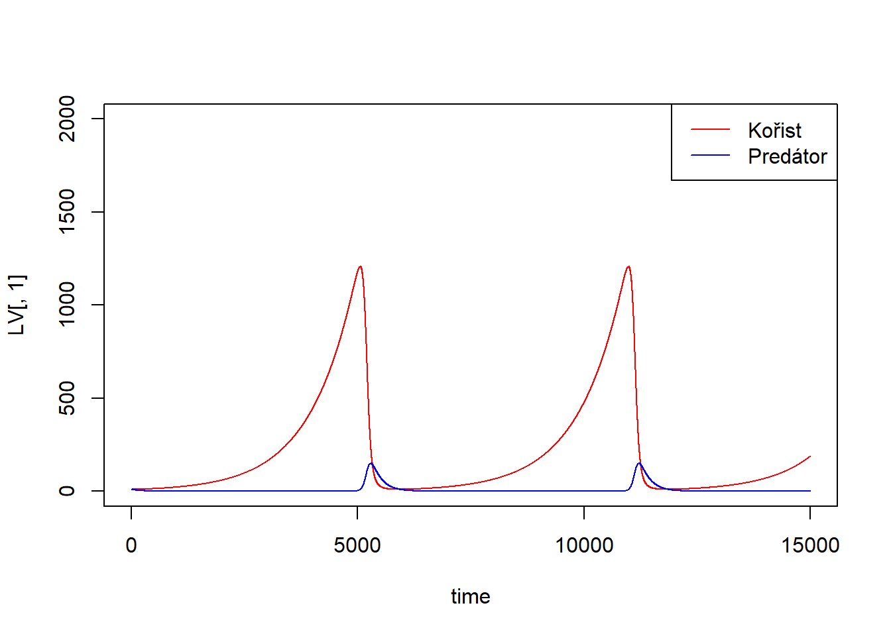
plot(LV[,1], LV[,2]) #x vs y (cyklický diagram)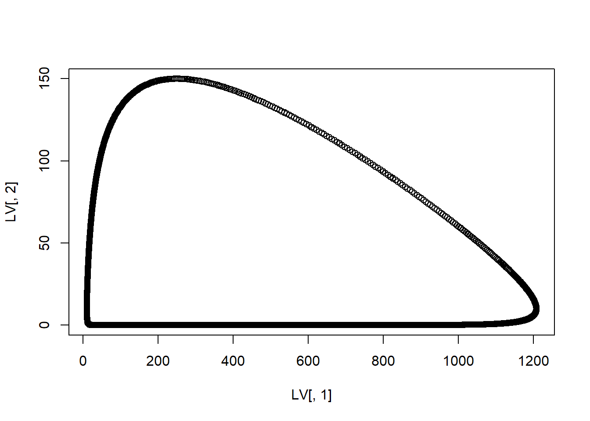
Numerické derivace, integrace, interpolace
Numerická derivace funkce
# Numerická derivace f’(x) vyp. pomocí centrální diference f’(x) = f(x+h)-f(x-h)/2h a Richardsonový extrapolace pro zvýšení přesnosti
f_der <- function(f ,x ,h ,n = 2){
h <- h/2^(0:(n-1)) #postupně zmenšujeme krok h, extrapolace(zvýšení přesnosti)
res <- (f(x+h)-f(x-h))/(2*h) #výpočet centrální diference (je přesnější než dopředná a zpětná)
m <- n
for(i in 2:n){
#zpřesnění pomocí rekurzivní rovnice, kde a je faktor zmenšení kroku
res <- (a*res[2:m]-res[1:(m-1)])/(a-1)
m <- m-1 #Richardsonova extrapolace
}
return(res)
} #O(h^2)střední přesnost, snadná implementace
fd <- function(f, x, hmax, n = 1){#f(funkce, jejiž derivaci počítáme),x(bod, ve kterém derivace),hmax(maximální krok, který se postupně zmenšuje), n(počet iterací extrapolace, která zvyšuje přesnost)
h <- hmax/2^(0:(n-1)) #zmenšuje krok h postupně
res <- (f(x+h)-f(x-h))/(2*h) #výpočet derivace pomocí centrální diference
if(n > 1){
for(i in 1:(n-1)){
m <- n-i+1
power <- 4^i #faktor zlepšení přesnosti, zde se používá mocnina 4 místo 2
res <- (power*res[2:m]-res[1:(m-1)])/(power-1)
} #rychlejší konvergence k přesnějšímu výsledku
} #O(h^4) má vysokou přesnost při malých hodnotách h
return(res)
}#výpočty derivací pro num. analýzu,přesné diferenciace,kde nelze použít anal. der.MidPointRule (num. integrace)
#Numerická integrace (Midpoint Rule)-vypočítá se šířka kroku h=(b-a)/n, sečtou se hodnoty funkce f(x) ve středních bodech intervalů, výsledek se vynásobí krokem h, čímž se získá aproximace int.
MidPointRule <- function(f,a,b,n){ h <- (b-a)/n; return(h*sum(f(h*(1:n)+a-h/2)))} #Integrál od a do b f(x)dx vlnovka h suma od n po i=l f(a+2i-1-/2h), kde h=b-a/n),
#integrace aplikuje Richardsonovu extrapolaci na výsledky metody středního bodu, což výrazně zvušuje přesnost integrace
MidPointRuleRichardson <- function(f,a,b,n=2){
m <- n
n <- 2^(0:(n-1)) #generuje hodnoty (násobky 2)
res <- sapply(n,function(n) MidPointRule(f,a,b,n))#výpočty intergrálů pro různé n
for(i in 2:m){
a <- 2^(2*i-2) #faktor zlepšení přesnosti
res <- (a*res[2:m]-res[1:(m-1)])/(a-1) #richardsonova extrapolace
m <- m-1
}
return(res) #pomocí extrapolace přesnost O(h^4), vysoká přesnost
}# pro num. integrace funkcí, kde neexistuje analytický vzorec, nebo pro výpočty v simulacích, fyzice, ekonomii atd...Hermitova interpolace (používá derivace)
#Hermitova interpolace, aproximuje funkci na základě hodnot v určitých bodech a také i zohledňuje jejich derivace v bodech (x0,x1) na rozdíl od Lagrangeovy int.
#x0,x1: body interpolace, y0,y1: hodnoty funkce v těchto bodech, d0,d1: hodnoty derivace v těchto bodech, polynom: P(x)=a+b(x-x0)+c(x-x0)^2+d(x-x0)^3
Hermite <- function(x0,x1,y0,y1,d0,d1){
a <- y0; b <- d0; h <- x1-x0; h2 <- h*h #koeficienty: a=y0, b=d0
d <- (h*(d1-d0)-2*(y1-y0)+2*d0*h)/(h*h2) #výpočet koeficientu d
c <- (d1-d0-3*d*h2)/(2*h) #výpočet koeficientu c
return(c(a,b,c,d)) # Vrací koeficienty interpolujícího polynomu, který je pak použit ve funkci Horner pro hodnocení hodnot interpolovaného polynomu
} #je složitější, ale přesnější než Lagrane nebo Newton, je vhodná když máme hodnoty funkce i její derivace
#Vyhodnocení hodnot interpolovaného polynomu pomocí hornerova schématu s koeficienty(a,b,c,d)
Horner <- function(coef,x,x0){ x <- x-x0; return(((coef[4]*x+coef[3])*x+coef[2])*x+coef[1])}
#používá se napříkladd v poč. grafice, num. analýze nebo aproximaci datf_der(sin, pi/4, 0.1, 3) #numerická derivace funkce sin(x) v bodě pí/4[1] 0.70572438546641069745a <- 0; b <- pi
MidPointRule(sin,a,b,100); MidPointRuleRichardson(sin,a,b,5)#Výpočet integrálu na intervalu od 0 do pí sin(x)dx pomocí metody středního bodu a Richardsonovy extrapolace[1] 2.0000822490709859736[1] 2.0000000054047775144#x jsou body interpolace,y jsou hodnoty funkce v bodech, d jsou hodnoty derivace v bodech y
x0 <- pi; x1 <- 2*pi; y0 <- cos(x0); y1 <- cos(x1); d0 <- -sin(x0); d1 <- -sin(x1)
plot(cos,xlim=c(x0,x1),col="red") #vykreslení skutečné funkce cos(x)
x <- seq(x0,x1,0.001) #vytvoření bodů pro interpoalci v intervalu (pí,2pí)
lines(x,Horner(Hermite(x0,x1,y0,y1,d0,d1),x,x0),col="blue") #interpolované polynomy s různými počátečními derivacemi, hermitova interpolace
lines(x,Horner(Hermite(x0,x1,y0,y1,-1,d1),x,x0),col="green")#variace s jinou derivací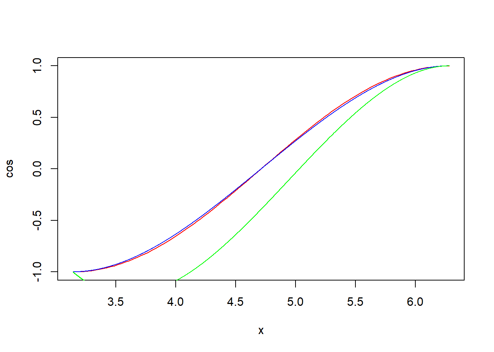
#vykreslení funkce pomocí centrální derivace
f <- function(x){return(2^x)}
plot(function(x) 2^x*log(2), xlim=c(0,2*pi), col='red', lwd = 2)
h <- 0.000000001
plot(function(x) (f(x+h)-f(x))/h, xlim=c(0,2*pi), col='green', add=TRUE)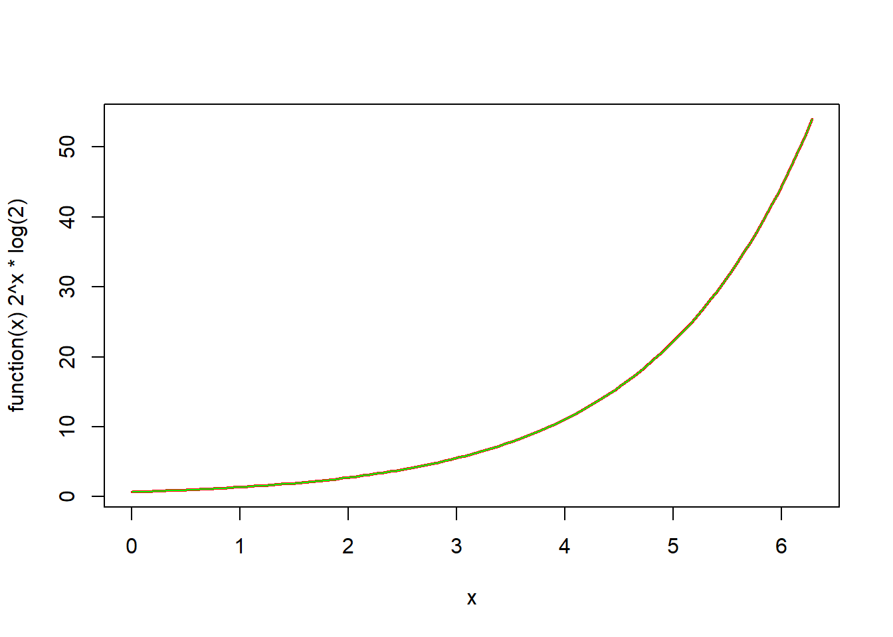
f <- function(x){return(x*x-2)}; fd <- function(x){return(2*x)}
#výpočti funkcí (stejný jako předtím)
#x <- 2000000000; res <- sqrt(2); for(i in 1:100){ x <- x - f(x)/fd(x); cat(res,"\n", x,"---------") }
#print(midpointrule(function(x) x^2*sin(x), 0, pi, 10000))
#num. der. exp. fce.
#for(x in 0:5){ cat(exp(x), fd(exp, x, 0.01, 3), "\n") } #porovnává hodnotu e na x s numericky spočítanou derivací pomocí fd(výsledky jsou blízko k analytické derivaci e na x)
#for(n in 1:5){ print(fd(sin, pi/4, 1, n)) } #derivace funkce sin(x) v bodě pí/4, která zlepšuje přesnost Richardsonovu extrapolaci (přesnost výsledku se zvyšuje s rostoucím n)Laplaceova rovnice
#iterační řešení laplaceovy rovnice (je parciální dif. rovnice, která popisuje stacionární(časově neměnné fyz. procesy, jako jsou tepelná vodivost,...)), vypadá takto: (d^2u/dx^2)+(d^2u/dy^2)=0
A <- matrix(0, 50, 50) #Matice A o rozměrech 50*50 reprezentuje mřížku 2D prostoru
A[1, ] <- 100 #Horní okraj mřížky je nastaven na hodnotu 100, ostatní body na 0
for(k in 1:10000){
for(i in 2:49){
for(j in 2:49){
A[i,j] <- 0.25*(A[i-1,j] + A[i+1, j] + A[i, j-1] + A[i, j+1]) #Iterativcně se aktualizují hodnoty uvnitř mřížky pomocí váženého průměru hodnot okolních bodů uij= 1/(ui-1,+ui+1,j atd…)
}
}
}
print(A[25,25]) #střed mřížky[1] 25.851134611832129906#Vykreslení vizualizace heatmapy výsledné matice
library(ggplot2); library(scales)
ggplot(as.data.frame(as.table(A)), aes(Var1, Var2, fill = Freq)) +
geom_tile() + scale_fill_gradient(low = "blue", high = "red") +
labs(title = "Heatmap of Matrix Values", x = "Row", y = "Column", fill = "Value") +
theme_minimal() + coord_fixed(ratio = 1)
n <- 48*48; A <- matrix(0, n, n); b <- numeric(n) #Matice A a vektor b odpovídají Laplaceově rovnici na mřížce 48*48 (bez okrajových bodů), Ax=b
for(i in 2:49){ #Každý bod mřížky je reprezentován jednou rovnicíí, kde diagonální prvek odpovídá hodnotě bodu a okolní prvky jeho sousedům.
for(j in 2:49){
k <- (i-2)*48+j-1
A[k,k] <- 4
if(i > 2) A[k, k-48] <- -1
if(i == 2) b[k] <- 100
if(i < 49) A[k, k+48] <- -1
if(j > 2) A[k, k-1] <- -1
if(j < 49) A[k, k+1] <- -1
}
}
#hodnota v bodě 25,25, která je získána vyřešením soustavy rovnic pomocí funkce solve
x <- solve(A, b)
i <- 25; j <- 25
print(x[(i-2)*48+j-1])[1] 25.851134611833032295#modeluje nám fyzikální jevyPrůbeh funkce (hledání extrémů)
f <- function(x) { return(cos(5*acos(x)))} #nadefinujeme si funkci
#uděláme první a druhou derivaci funkce
fd <- function(f,x, h=1e-5){return((f(x+h)-f(x-h))/(2*h))} #první derivace (centrální difference), k aproximaci první derivace (přesnější než dopředná)
fdd <- function(f,x, h=1e-5){return((f(x+h)-2*f(x)-f(x-h))/(2*h))} #druhá derivace (pomocí centrální difference)Hledání extrémů
#najdem extremy, kde f'(x)=0 v celé funkci od -1 do 1
x_hodnoty <- seq(-1,1,length.out=100000)#rozsah x a i vytvoření osy k interpolaci, lenght.out je citlivost zaznamenávání extrémů (zde musí být vykoká)
derivace <- sapply(x_hodnoty, function(x) fd(f,x))Warning in acos(x): NaNs produced
Warning in acos(x): NaNs producedextremy <- x_hodnoty[which(abs(derivace)<1e-3)] #vyfiltrujeme hodnoty přibližné 0 aby zbyly extrémy
extremy <- x_hodnoty[which(diff(sign(derivace)) != 0)] #vymažu stejné hodnoty
#rozlišíme minima a maxima podle druhé derivace, podle toho jestli je <>
druhe_derivace <- sapply(extremy, function(x) fdd(f,x,h=1e-1))
typy_extremu <- ifelse(druhe_derivace>0,"Minimum","Maximum")
print(extremy) #můžem si je vypsat pro kontrolu[1] -0.80901809018090187209 -0.30903309033090331504 0.30901309013090139111
[4] 0.80899808998089972611Hledáme kořeny funkce pomocí bisekce
#najdeme kořeny pro řešení f(x)=0
bisekce <- function(f, a, b){
fa <- f(a); fb <- f(b)
if(fa*fb < 0){
repeat{
c <- (a+b)/2
if(c == a || c == b) return(c)
fc <- f(c)
if(fa*fc < 0) {
b <- c
fb <- fc
}else{
a <- c
fa <- fc
}
}
}
else{ stop("Spatne vstupni zadani"); return(FALSE) }
}
#hledání kořenů mezi intervaly v celý funkci od -1 do 1
koreny <- c()
for(i in 1:(length(x_hodnoty)-1)){ #projdém iteraci délkou x hodnot
if(f(x_hodnoty[i])*f(x_hodnoty[i+1])<0){#zjišťuji jestli existuje v intervalu kořen
koren <- bisekce(f,x_hodnoty[i],x_hodnoty[i+1])
#přidání nalezen. kořene do vektoru pokud není NA
if (!is.na(koren)) koreny <- c(koreny, koren)
}
}
print(koreny) #můžem si vypsat pro kontrolu[1] -9.5105651629515364220e-01 -5.8778525229247335915e-01
[3] -4.9789962505148006012e-17 5.8778525229247313710e-01
[5] 9.5105651629515364220e-01#vykreslení extrémů a kořenů
plot(x_hodnoty, f(x_hodnoty),type="l",col="green",lwd=2, main="Numerické hledání extrémů a kořenů", xlab="x", ylab="f(x)") #interpolace funkce
points(extremy,f(extremy),col=ifelse(typy_extremu == "Minimum", "blue", "red"), pch=19)
points(koreny, f(koreny), col="purple", pch=4)
Dvojnásobný integrál
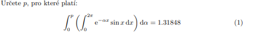
##hledání p v dvojnásobném integrálu
# Numerická integrace metodou středního bodu
MidPointRule <- function(f, a, b, n) {
h <- (b - a) / n
x <- seq(a + h/2, b - h/2, length.out = n)
return(h * sum(f(x)))
}
# Vnitřní integrál I(α) (0,2)
InnerIntegral <- function(alpha) {
f <- function(x) exp(-alpha * x) * sin(x)
return(MidPointRule(f, 0, 2 * pi, 1000)) # Numerická integrace přes x
}
# Vnější integrál J(p) (0,p)
OuterIntegral <- function(p) {
g <- function(alpha) InnerIntegral(alpha)
return(MidPointRule(g, 0, p, 1000)) # Numerická integrace přes α
}
# Hledání p tak, aby J(p) = 1.31848 (bisekční metoda)
FindP <- function(target, p_min, p_max, tol = 1e-5) {
while (abs(p_max - p_min) > tol) {
p_mid <- (p_min + p_max) / 2
J_mid <- OuterIntegral(p_mid)
if (J_mid < target) {
p_min <- p_mid
} else {
p_max <- p_mid
}
}
return((p_min + p_max) / 2)
}
# Hledání p
target_value <- 1.31848
p_solution <- FindP(target_value, 0, 5)
print(p_solution)[1] 4.9999952316284179687Řešení soustavy rovnic a dosazování matice A
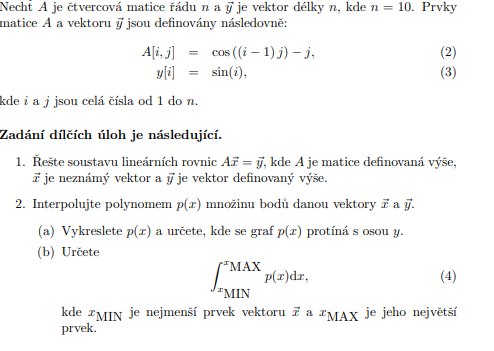
n <- 10; A <- matrix(0, n, n); y <- numeric(n)
for (i in 1:n) {
for (j in 1:n) {
A[i, j] <- cos((i - 1) * j) - j
}
y[i] <- sin(i)
}
# 1. Řešení soustavy A * x = y
Gauss <- function(A,b){ #řešení lineárních rovnic Ax = b
n <- length(b); Ab <- cbind(A,b) #uprava původní matice A do horní trojúhelnikové formy pomocí přímého chodu, řešení rovnice zpětným chodem pro přímý chod
#přímý chod (pro každý sloupec(k) zrušíme prvky pod diagonálou násobem a odečítáním řádků, výsledkem je (horní trojúhelníková matice pro zpětný chod)
for (k in 1:(n-1)) {
#pivot - můžem dát pro vylepšení
max_row <- which.max(abs(Ab[(k:n),k]))+k-1 #(maximální prvek v akt sloupci pod nebo na diagonale)
if(max_row != k){
j <- k:(n+1)
temp <- Ab[k,j]
Ab[k,j] <- Ab[max_row,j]
Ab[max_row,j] <- temp
}
for(i in (k+1):n){
c <- -Ab[i,k]/Ab[k,k]
j <- (k+1):(n+1)
Ab[i,j] <- Ab[i,j] + c*Ab[k,j]
}
}
#zpětný chod (počítáme neznámé, začínáme od posledního řádku a postupujeme nahoru, postupně počítáme neznámé x pomocí horní trojúhelníkové matice)
x <- b
x[n] <- Ab[n,n+1]/Ab[n,n]
for (i in (n-1):1) {
x[i] <- (Ab[i,n+1] - sum(Ab[i,(i+1):n]*x[(i+1):n]))/Ab[i,i]
}
return(x) #vektor x, který je řešení soustavy lin. rovnic
}
print(solve(A, y)); print(Gauss(A,y)) [1] 1.339109442371420044537 -1.130513917316488203824 -0.524337194762319547259
[4] 1.532726843025794538633 -0.760031422869154926758 0.431100835613461019769
[7] 0.011557672485774377058 0.554577004976064880104 2.201428299075885774982
[10] -2.659850350665447393794 [1] 1.339109442371412272976 -1.130513917316468219809 -0.524337194762310776497
[4] 1.532726843025765672834 -0.760031422869148265420 0.431100835613453081674
[7] 0.011557672485779964602 0.554577004976054999119 2.201428299075846695132
[10] -2.659850350665401652606x = Gauss(A,y)
# 2. Interpolace polynomem p(x)
polyfit <- function(x, y, deg) {
fit <- lm(y ~ poly(x, deg, raw = TRUE))
return(coef(fit))
}
NewtonPolCoef <- function(x,y){ #vektor bodů na ose x a y(mnoziny bodů)
n <- length(x); coef <- numeric(n) #vytvoření prázdného vektoru
coef[1] <- y[1] #první coef c1 a y1
if(n > 1){
for (i in 2:n) {
suma <- coef[1]; nasobic <- 1
for(j in 1:(i-1)){
nasobic <- nasobic*(x[i]-x[j])
suma <- suma + coef[j]*nasobic
} #metoda dělených rozdílů, koeficienty c[i] jsou počítány iterativně pomocí dělených rozdílů a předchozích výsledků.
coef[i] <- (y[i]-suma)/nasobic
} #c jsou koef. získané pomocí dělených rozdílů
}
return(coef) #Vektor koeficientů Newtnova polynomu
}
#pol. P(t)=c1+c2(t-x1)+c3(t-x1)(t-x2)+...+cn-1(t-x1)(t-x2)...(t-xn-1)
NewtonPolValue <- function(t,x,coef){#t-bod,kde hodnotíme polynom.x: uzly na ose x, coef: koeficienty pol. vypoc. funkcí NewtonPolCoef.
n <- length(coef); res <- coef[n] #Začíná od posledního koeficientu cn
for (i in (n-1):1) {
res <- res*(t-x[i])+coef[i]#Newtonův polynom je vyjádřen v rekurzivním tvaru s využitím základních polynomů P(t)
}
return(res) #hodnota polynomu v bodech t P(t)
}
LSA <- function(x, y, n){ #x a y jevektor hodnot, n je stupeň polynomu
A <- matrix(0, n, n); b <- numeric(n) #vytvoření matice A a vektoru b
for(i in 1:n){
for(j in 1:n){
#A je matice součtů mocnin x
A[i,j] <- sum(x^{i+j-2})
}#b je vektor součtů součinů yx^i-1
b[i] <- sum(y*x^{i-1}) # součty součinů y*x^(i-1)
} #vyřeší se lin. soustava rovnic LS: A*c=b což
return(solve(A, b)) # vrátí vektor koeficientů c (aprox. polynomu)
}
#pol. je obecně vyjádř. ve tvaru: P(x)=anx^n+an-1x^n-1+…+a1x+a0
Horner <- function(x,coef){ #vyhodnocení polynomu pomocí tvaru funkce: P(x)=(…((anx+an-1)x+an-2)*x+…+a1)x+a0, kde tento přístup minimalizuje počet násobení a sčítání (operací) při výpočtu hodnoty polynomu
n <- length(coef); res <- coef[n] #Výpočet začíná od nejvyššího koef.
for (i in (n-1):1) { #pro každý koef. od an-1 po a0 akt. res=res*x+ai
res <- res*x+coef[i] #se postupně přidává k dalším koeficientům tak, že každý mezivýsledek res násobíme x a přičítáme další koef.
}
return(res) #hodnota polynomů pro dané x
}# vhodné pouze pro hodnocení polynomu
t <- seq(0,2*pi,by=0.01)
plot(x,y)
lines(t,NewtonPolValue(t,x,NewtonPolCoef(x,y)),col="orange") #newtonova interpolace
# 3. Najdeme průsečík s osou y
coef <- LSA(x,y,5)
plot(function(x) Horner(x, coef), add=TRUE, col='red', lw = 2, xlim = c(-3, 3))
polyval <- function(coef, x) {
deg <- length(coef) - 1
y <- sapply(x, function(xi) sum(coef * xi^(deg:0)))
return(y)
}
abline(h=0, col='blue') 
# 4. Výpočet integrálu polynomu
x_min <- min(x); x_max <- max(x)
# Numerická integrace metodou středního bodu
MidPointRule <- function(f, a, b, n) {
h <- (b - a) / n
x <- seq(a + h/2, b - h/2, length.out = n)
return(h * sum(f(x)))
}
p_function <- function(x) { Horner(x,coef) }
integral_value <- MidPointRule(p_function, x_min, x_max, 1000)
cat("Hodnota integrálu:", integral_value, "\n")Hodnota integrálu: 0.40180117577684409946 Dosazování rovnic s určitým interálem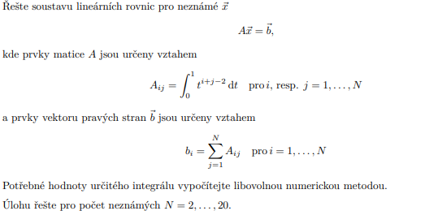
#výpočet integrálu
simpsons_rule <- function(f, a, b, n = 1000) {
h <- (b - a) / n
x <- seq(a, b, length.out = n + 1)
y <- f(x)
return((h / 3) * (y[1] + 4 * sum(y[seq(2, n, by = 2)]) + 2 * sum(y[seq(3, n-1, by = 2)]) + y[n + 1]))
}
# výpočet matice A
construct_A <- function(N) {
A <- matrix(0, nrow=N, ncol=N)
for (i in 1:N) {
for (j in 1:N) {
f <- function(t) t^(i + j - 2)
A[i, j] <- simpsons_rule(f, 0, 1)
}
}
return(A)
}
# výpočet vektoru b
construct_b <- function(A) {
return(rowSums(A)) # Sum across rows
}
#výpočty hodnot matic pro n
for (N in 2:20) {
A <- construct_A(N)
b <- construct_b(A)
svd_A = svd(A)
x <- svd_A$v %*% diag(1 / svd_A$d) %*% t(svd_A$u) %*% b
}
print(x[1:10]) #prvních 10 řešení pro n=1...10 [1] 1.00000006705522537231 0.99996280670166015625 1.00131225585937500000
[4] 0.97265625000000000000 1.41796875000000000000 -2.20312500000000000000
[7] 4.37500000000000000000 -16.62500000000000000000 23.50000000000000000000
[10] 5.50000000000000000000Num integrace pomocí Newton-Cotesových vzorců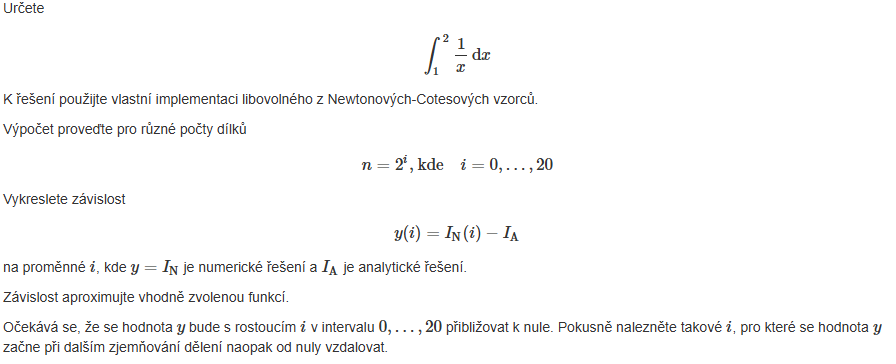
# 1. Definice funkce a analytické řešení
f <- function(x) { 1/x } # integrujeme f(x) = x
a <- 1
b <- 2
IA <- (b^2 - a^2) / 2 # analytické řešení integrálu
cat("Analytické řešení =", IA, "\n")Analytické řešení = 1.5 # 2. Lichoběžníkové pravidlo
TrapezoidalRule <- function(f, a, b, n) {
h <- (b - a) / n
s <- 0.5 * f(a) + 0.5 * f(b)
for (k in 1:(n-1)) {
s <- s + f(a + k * h)
}
return(h * s)
}
# 3. Smyčka pro n = 2^i, i=0..20
I_num <- numeric(21) # sem uložíme numerické výsledky
y <- numeric(21) # sem uložíme chyby
for (i in 0:20) {
n <- 2^i
I_num[i+1] <- TrapezoidalRule(f, a, b, n)
y[i+1] <- I_num[i+1] - IA
}
# 4. Vykreslení výsledků
# chyba y(i) v závislosti na i
plot(0:20, y, type="b", col="blue", pch=19, xlab="i (n = 2^i)", ylab="y(i) = I_N - I_A", main="Chyba lichoběžníkové metody")
abline(h=0, col="red", lty=2)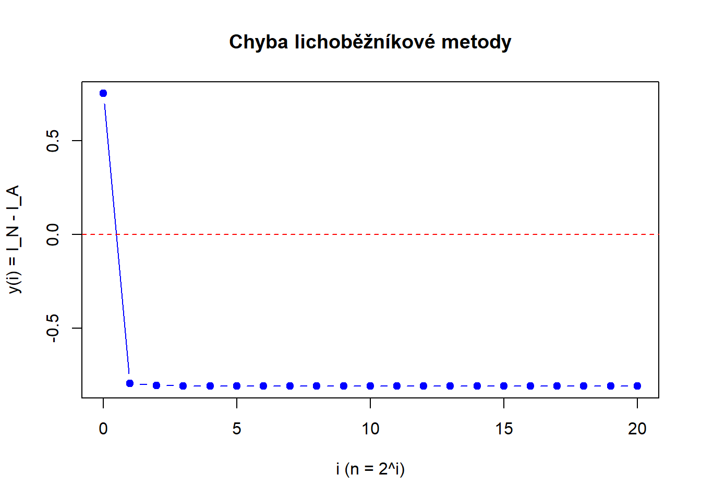
# volitelně: logaritmický graf chyby
plot(0:20, log10(abs(y)), type="b", col="darkgreen", pch=19, xlab="i (n = 2^i)", ylab="log10(|chyba|)", main="Pokles chyby vs. i (očekáváme sklon -2)")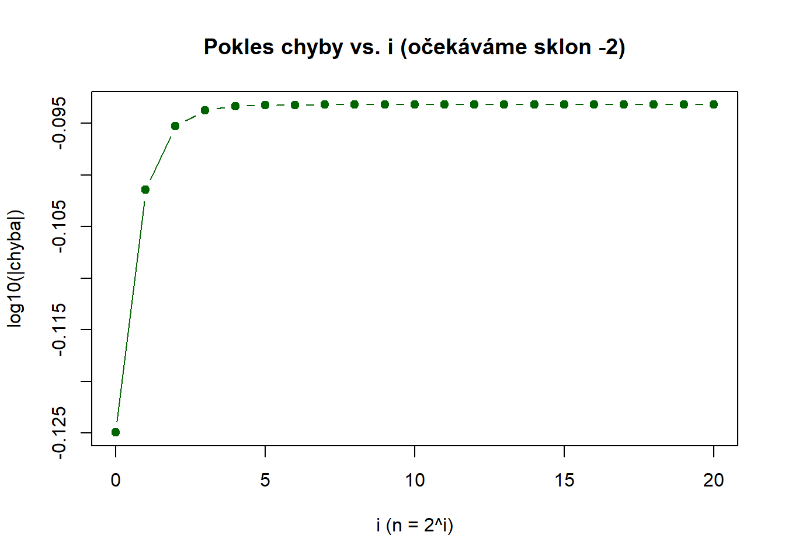
Řešení soustavy lin. rovnic pomocí interpolace polynomem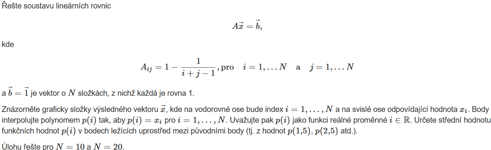
# Funkce na sestavení matice A
makeA <- function(N) {
A <- matrix(0, nrow=N, ncol=N)
for(i in 1:N) {
for(j in 1:N) {
A[i,j] <- 1 - 1/(i+j-1)
}
}
return(A)
}
# Newtonova interpolace
newton_coef <- function(x, y) {
n <- length(x); coef <- y
for (j in 2:n) {
for (i in n:j) {
coef[i] <- (coef[i] - coef[i-1]) / (x[i] - x[i-j+1])
}
}
return(coef)
}
newton_eval <- function(coef, x_nodes, x) {
n <- length(coef)
result <- coef[n]
for (i in (n-1):1) {
result <- result * (x - x_nodes[i]) + coef[i]
}
return(result)
}
Gauss <- function(A,b){ #řešení lineárních rovnic Ax = b
n <- length(b); Ab <- cbind(A,b) #uprava původní matice A do horní trojúhelnikové formy pomocí přímého chodu, řešení rovnice zpětným chodem pro přímý chod
#přímý chod (pro každý sloupec(k) zrušíme prvky pod diagonálou násobem a odečítáním řádků, výsledkem je (horní trojúhelníková matice pro zpětný chod)
for (k in 1:(n-1)) {
#pivot - můžem dát pro vylepšení
max_row <- which.max(abs(Ab[(k:n),k]))+k-1 #(maximální prvek v akt sloupci pod nebo na diagonale)
if(max_row != k){
j <- k:(n+1)
temp <- Ab[k,j]
Ab[k,j] <- Ab[max_row,j]
Ab[max_row,j] <- temp
}
for(i in (k+1):n){
c <- -Ab[i,k]/Ab[k,k]
j <- (k+1):(n+1)
Ab[i,j] <- Ab[i,j] + c*Ab[k,j]
}
}
#zpětný chod (počítáme neznámé, začínáme od posledního řádku a postupujeme nahoru, postupně počítáme neznámé x pomocí horní trojúhelníkové matice)
x <- b
x[n] <- Ab[n,n+1]/Ab[n,n]
for (i in (n-1):1) {
x[i] <- (Ab[i,n+1] - sum(Ab[i,(i+1):n]*x[(i+1):n]))/Ab[i,i]
}
return(x) #vektor x, který je řešení soustavy lin. rovnic
}
# Hlavní výpočet
solve_system <- function(N) {
A <- makeA(N)
b <- rep(1, N)
# vyřešíme soustavu
x <- Gauss(A, b)
print(x)
# vykreslení řešení
plot(1:N, x, type="b", col="blue", main=paste("Reseni pro N =", N), xlab="i", ylab="x[i]")
# interpolace
coef <- newton_coef(1:N, x)
# hodnoty uprostřed
mids <- seq(1.5, N-0.5, by=1)
mid_vals <- sapply(mids, function(xx) newton_eval(coef, 1:N, xx))
points(mids, mid_vals, col="red", pch=19) # přidáme červené body
return(list(x=x, mids=mids, mid_vals=mid_vals))
}
# Spuštění pro N = 10
x10 <- solve_system(10) [1] -1.0109416131481591128e-01 1.0007240136308894308e+01
[3] -2.4015343164873078762e+02 2.4280525954723243558e+03
[5] -1.2746561714442463199e+04 3.8237890492005935813e+04
[7] -6.7975760525881574721e+04 7.0747852785765528096e+04
[9] -3.9794478984524517729e+04 9.3342627376036634811e+03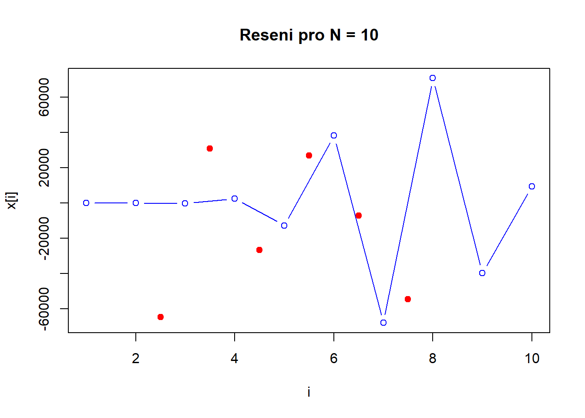
x20 <- solve_system(20) [1] -6.2004622133922805693e-02 9.0855136594134364714e+00
[3] -3.2532384247678737665e+02 4.9378140153045496845e+03
[5] -3.9035451799663678685e+04 1.7562385061193630099e+05
[7] -4.5713822474960517138e+05 6.3474771563690446782e+05
[9] -2.7941253846056392650e+05 -3.2409477482047566446e+05
[11] 2.3701304271642517415e+05 4.2620484988616366170e+05
[13] -7.1681385136363422496e+05 5.7999933942896942608e+05
[15] -7.6292882192156714154e+04 -6.1110814093425357713e+05
[17] 2.6141177571790548972e+05 8.1781633509650989433e+05
[19] -9.0565882757646380919e+05 2.7211727321879123338e+05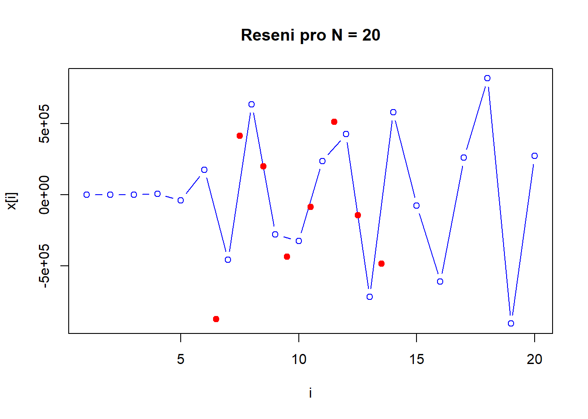
Interpolace polynomu pomocí rovnice závislosti
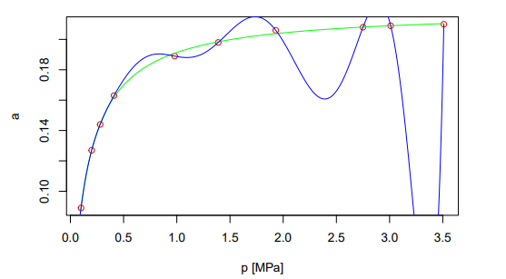
p <- c(0.1, 0.2, 0.28, 0.41, 0.98, 1.39, 1.93, 2.75, 3.01, 3.51)
a <- c(0.089, 0.127, 0.144, 0.163, 0.189, 0.198, 0.206, 0.208, 0.209, 0.210)
knitr::kable(t(setNames(data.frame(p, a), c("$p$ [MPa]", "$a$"))))| \(p\) [MPa] | 0.100000000000000005551 | 0.20000000000000001110 | 0.28000000000000002665 | 0.40999999999999997558 | 0.97999999999999998224 | 1.38999999999999990230 | 1.92999999999999993783 | 2.75000000000000000000 | 3.00999999999999978684 | 3.50999999999999978684 |
| \(a\) | 0.088999999999999995781 | 0.12700000000000000178 | 0.14399999999999998912 | 0.16300000000000000600 | 0.18900000000000000133 | 0.19800000000000000933 | 0.20599999999999998868 | 0.20799999999999999045 | 0.20899999999999999134 | 0.20999999999999999223 |
plot(p, a, col='red', xlab="p [MPa]", pch=19, cex=1)
Vandermonde <- function(x,y){
n <- length(x); A <- matrix(1,nrow=n,ncol=n)
for(j in 2:n){ #pro kaž. bod(xi,yi) platí že hodnota P(xi) se musí=yi
A[,j] <- A[,j-1]*x #to vede k lin. soustavě rovnic a*c=y
} #c - vektor koeficientú, y - vektor hodnot
return(solve(A,y)) #vektor c koeficientů interp. polynomu stupně n-1
}
#pol. je obecně vyjádř. ve tvaru: P(x)=anx^n+an-1x^n-1+…+a1x+a0
Horner <- function(x,coef){ #vyhodnocení polynomu pomocí tvaru funkce: P(x)=(…((anx+an-1)x+an-2)*x+…+a1)x+a0, kde tento přístup minimalizuje počet násobení a sčítání (operací) při výpočtu hodnoty polynomu
n <- length(coef); res <- coef[n] #Výpočet začíná od nejvyššího koef.
for (i in (n-1):1) { #pro každý koef. od an-1 po a0 akt. res=res*x+ai
res <- res*x+coef[i] #se postupně přidává k dalším koeficientům tak, že každý mezivýsledek res násobíme x a přičítáme další koef.
}
return(res) #hodnota polynomů pro dané x
}# vhodné pouze pro hodnocení polynomu
NewtonPolCoef <- function(x,y){ #vektor bodů na ose x a y(mnoziny bodů)
n <- length(x); coef <- numeric(n) #vytvoření prázdného vektoru
coef[1] <- y[1] #první coef c1 a y1
if(n > 1){
for (i in 2:n) {
suma <- coef[1]; nasobic <- 1
for(j in 1:(i-1)){
nasobic <- nasobic*(x[i]-x[j])
suma <- suma + coef[j]*nasobic
} #metoda dělených rozdílů, koeficienty c[i] jsou počítány iterativně pomocí dělených rozdílů a předchozích výsledků.
coef[i] <- (y[i]-suma)/nasobic
} #c jsou koef. získané pomocí dělených rozdílů
}
return(coef) #Vektor koeficientů Newtnova polynomu
}
#pol. P(t)=c1+c2(t-x1)+c3(t-x1)(t-x2)+...+cn-1(t-x1)(t-x2)...(t-xn-1)
NewtonPolValue <- function(t,x,coef){#t-bod,kde hodnotíme polynom.x: uzly na ose x, coef: koeficienty pol. vypoc. funkcí NewtonPolCoef.
n <- length(coef); res <- coef[n] #Začíná od posledního koeficientu cn
for (i in (n-1):1) {
res <- res*(t-x[i])+coef[i]#Newtonův polynom je vyjádřen v rekurzivním tvaru s využitím základních polynomů P(t)
}
return(res) #hodnota polynomu v bodech t P(t)
}
Lagrange <- function(t,x,y){ #počítáme bod t, kde chceme spočítat intepolaci, x jsou body dané na ose x, y jsou uzly na ose y (vektor)
n <- length(x); suma <- 0
for (i in 1:n) {
nasobic <- 1#jsou použity jako váhy pro příslušné základní polynomy
for(j in 1:n){
if(j!=i){ #pro j!= 0
nasobic <- nasobic*(t-x[j])/(x[i]-x[j]) #Lagrangeův základní polynom Li(t), která se skládá z násobků (t-xj)/(xi-xj), kde j se nerovná i.
}
}
suma <- suma+y[i]*nasobic #suma hodnot všech základních polynomů násobených odpovídající hodnotou y[i]
}
return(suma) #hodnota interpolovaneho polynomu v bodech t stupně n-1
}
t <- seq(min(p),max(p),by=0.001) #celá čára (místo by můžem použít leght.out)
lines(t,Horner(t, Vandermonde(p,a)),col="green", lwd=1)
lines(t,NewtonPolValue(t,p,NewtonPolCoef(p,a)),col="orange")
#points(t, Lagrange(t, p, a),col="red", pch=20, cex=0.5)
# Nonlinear Least Squares Fit
model <- nls(a ~ (am * b * p) / (1 + b * p), start = list(am = 0.22, b = 1))
params <- coef(model)
am_est <- params["am"]
b_est <- params["b"]
# Interpolating Polynomial (Using Polynomial Regression)
# Generate a sequence for smooth plotting
p_seq <- seq(min(p), max(p), length.out = 100)
# Compute values from the fitted model
a_model <- (am_est * b_est * p_seq) / (1 + b_est * p_seq) #analytické vyjádření závislosti a(p)
# Plot data
#plot(p, a, col="red", pch=16, xlab="p [MPa]", ylab="a", main="Data, Model Fit, and Interpolation")
lines(p_seq, a_model, col="blue", lwd=1) # Model Fit
legend("bottomright", legend=c("Data", "Model Fit", "Polynomial Interpolation"),
col=c("red", "blue", "green"), pch=c(16, NA, NA), lty=c(NA, 2, 3), lwd=c(NA, 2, 2))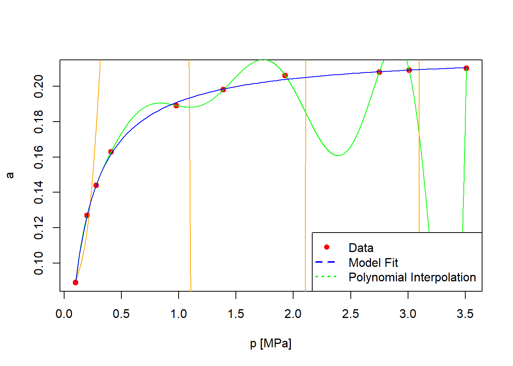
# Print estimated parameters
print(paste("Estimated am:", round(am_est, 4))); print(paste("Estimated b:", round(b_est, 4)))[1] "Estimated am: 0.2192"[1] "Estimated b: 6.8744"Řešení integrace pomocí rovnice 1. řádu
f <- function(x, y) { return(y - x) } # y' = y - x
RK4 <- function(x,y,f,h){ #4 mezikroky k dosažení vyšší přesnosti, má velmi malou chybu i při větších krocích. Bere totiž v úvahu. derivace na začátku, uprostřed a na konci intervalu.
hhalf <- 0.5*h
k1 <- f(x,y)
k2 <- f(x+hhalf,y+hhalf*k1)
k3 <- f(x+hhalf,y+hhalf*k2)
k4 <- f(x+h,y+h*k3)
return (y+((h/6)*(k1+2*(k2+k3)+k4)))
}
RK4_solve <- function(x0, y0, f, h, x_end) {
x_vals <- seq(x0, x_end, by = h)
y_vals <- numeric(length(x_vals))
y_vals[1] <- y0
for (i in 2:length(x_vals)) {
y_vals[i] <- RK4(x_vals[i-1], y_vals[i-1], f, h)
}
return(list(x = x_vals, y = y_vals))
}
bisekce <- function(target_integral, tol = 1e-4) {
a <- 0; b <- 1; max_iter <- 100
for (iter in 1:max_iter) {
c <- (a + b) / 2 # Střed intervalu
sol <- RK4_solve(0, c, f, h = 0.001, x_end = 1) # Řešíme ODE pomocí RK4
integral_approx <- sum(sol$y) * 0.01 # Přibližný integrál
if (abs(integral_approx - target_integral) < tol) {
return(list(y0 = c, solution = sol)) # Našli jsme správné y(0)
}
if (integral_approx > target_integral) { b <- c }
else { a <- c }
}
return(NULL)
}
# Najdeme správnou počáteční podmínku
n <- 10; x <- 0; y <- 1; h=0.01
for (i in 1:n) {
y <- RK4(x, y, f, h)
x <- x + h
cat("x =", x, ", y =", y, "\n")
}x = 0.010000000000000000208 , y = 1.0100000000000000089
x = 0.020000000000000000416 , y = 1.0200000000000000178
x = 0.02999999999999999889 , y = 1.0300000000000000266
x = 0.040000000000000000833 , y = 1.0400000000000000355
x = 0.050000000000000002776 , y = 1.0500000000000000444
x = 0.060000000000000004718 , y = 1.0600000000000000533
x = 0.070000000000000006661 , y = 1.0700000000000000622
x = 0.080000000000000001665 , y = 1.0800000000000000711
x = 0.089999999999999996669 , y = 1.0900000000000000799
x = 0.099999999999999991673 , y = 1.1000000000000000888 result <- bisekce(2)
print(result$y0) # Hodnota y(0)[1] 0.243377685546875plot(result$solution$x, result$solution$y, type="l", col="blue", lwd=2, main="Řešení ODE metodou bisekce", xlab="x", ylab="y(x)")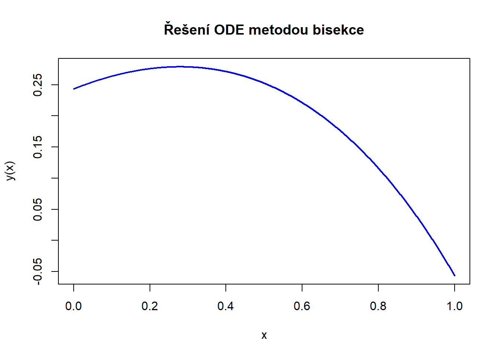
#N <- 10; tMax <- 2; dt <- tMax/N; t <- dt*(0:N) #casova sekvence
#n0 <- 300; n <- t; n[1] <- n0
#nRK4 <- numeric(length(t)); nRK4[1] <- n0
#for(i in 1:N) nRK4[i+1] <- RK4(t[i], nRK4[i],f, dt)
#plot(t, nRK4, col='violet', type='l', lwd=2,
# main="Řešení ODE s počáteční podmínkou n0=300",
# xlab="t", ylab="n(t)")
#points(t, nRK4, col='violet', pch=19)Van der Waals stavová rovnice
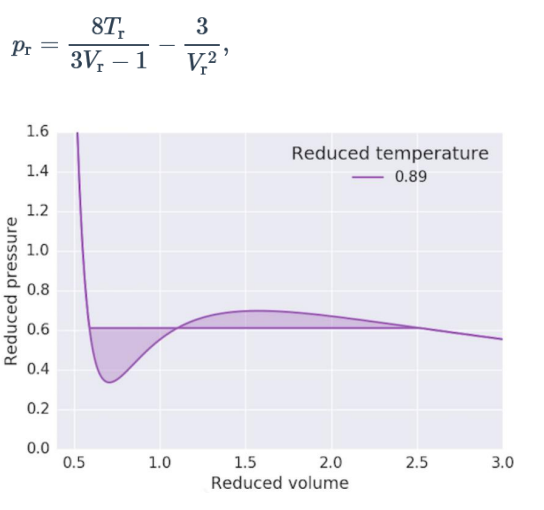
# Funkce pro výpočet redukovaného tlaku
vdw_pressure <- function(Vr, Tr) {
pr <- (8 * Tr) / (3 * Vr - 1) - 3 / Vr^2
return(pr)
}
# Definujeme rozsah redukovaných objemů
Vr_range <- seq(0.5, 3.0, by = 0.0001)
# Redukovaná teplota (z grafu vidíme Tr = 0.89)
Tr <- 0.89
# Vypočítáme redukované tlaky
pr_values <- vdw_pressure(Vr_range, Tr)
# Vytvoříme dataframe pro plotting
df <- data.frame(Vr = Vr_range, pr = pr_values)
# Vykreslíme graf
plot(df, type="l", col="purple", lwd=2,
xlab="Reduced volume", ylab="Reduced pressure", ylim=c(0,1.6))
y_line <- 0.6
x_vals <- seq(0.6, 2.6, by=0.01)
y_vals <- rep(y_line, length(x_vals))
lines(x_vals, y_vals, col="purple", lwd=2)
# Najdeme minimum (pokud existuje)
min_index <- which.min(pr_values)
min_Vr <- Vr_range[min_index]; min_pr <- pr_values[min_index]
cat("Minimum je při Vr =", min_Vr, "a pr =", min_pr, "\n")Minimum je při Vr = 0.7079999999999999627 a pr = 0.34964932494071465641 # Numerické řešení pro konkrétní tlak
target_pressure <- 0.6 # Například najdeme Vr pro pr = 0.6
# Definujeme funkci pro root finding
pressure_diff <- function(Vr) { vdw_pressure(Vr, Tr) - target_pressure }
# Použijeme uniroot pro nalezení kořenů
# Můžeme mít více řešení, takže hledáme v různých intervalech
root1 <- uniroot(pressure_diff, c(0.5, 1.0))$root
root2 <- uniroot(pressure_diff, c(1.1, 3.0))$root
cat("Pro pr =", target_pressure, "máme Vr =", root1, "nebo Vr =", root2, "\n")Pro pr = 0.5999999999999999778 máme Vr = 0.59435582330995617717 nebo Vr = 2.6271817592244222084 # Ověříme výsledky
cat("Kontrola: pr(", root1, ") =", vdw_pressure(root1, Tr), "\n")Kontrola: pr( 0.59435582330995617717 ) = 0.60009130987594971884 cat("Kontrola: pr(", root2, ") =", vdw_pressure(root2, Tr), "\n")Kontrola: pr( 2.6271817592244222084 ) = 0.60000000213145987527 # Body pro vykreslení
Vr <- seq(0.5, 3, length.out = 500)
pr <- vdw_pressure(Vr, Tr)
Vr1 <- root1
Vr2 <- root2
idx <- Vr >= Vr1 & Vr <= Vr2
polygon(c(Vr[idx], rev(Vr[idx])),
c(pr[idx], rep(y_line, sum(idx))),
col=rgb(0.5,0,0.8,0.3), border=NA)
# Oblast nad čarou (mimo interval Vr1->Vr2)
idx2 <- Vr <= Vr1 | Vr >= Vr2
polygon(c(Vr[idx2], rev(Vr[idx2])),
c(pr[idx2], rep(y_line, sum(idx2))),
col=rgb(0,0.6,0.3,0.3), border=NA)
# Derivace
dpr_fun <- function(Vr, Tr) { -24*Tr / (3*Vr - 1)^2 + 6 / Vr^3 }
# Najdi extrémy pomocí uniroot
Vr_min <- uniroot(dpr_fun, c(0.5, 1), Tr=Tr)$root
Vr_max <- uniroot(dpr_fun, c(1, 3), Tr=Tr)$root
# Hodnoty tlaku
pr_min <- vdw_pressure(Vr_min, Tr); pr_max <- vdw_pressure(Vr_max, Tr)
cat("Minimum: Vr =", Vr_min, "pr =", pr_min, "\n")Minimum: Vr = 0.70805489563539381059 pr = 0.34964931633157814161 cat("Maximum: Vr =", Vr_max, "pr =", pr_max, "\n")Maximum: Vr = 1.5668632591603370852 pr = 0.7020518106750737175 points(c(Vr_min, Vr_max), c(pr_min, pr_max), col=c("red","blue"), pch=19)
grid(nx = NULL, ny = 8, col = "lightgray",lty="solid")
legend("topright", legend=c("Minimum","Maximum"), col=c("red","blue"), pch=19)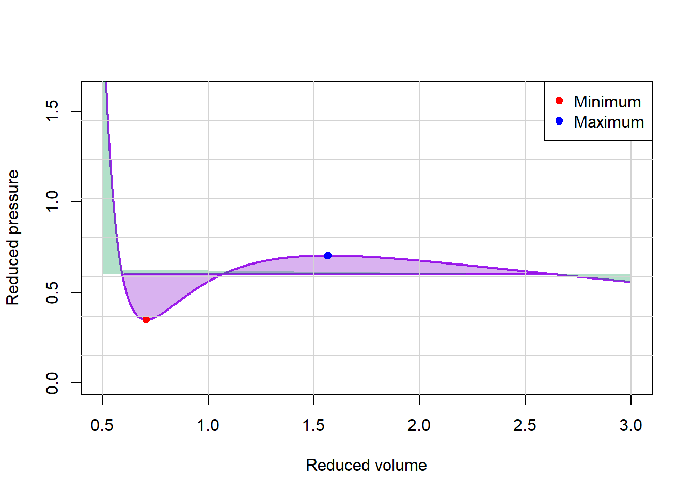
Hledání a interpolování konce b v integrálu
library(ggplot2); library(gridExtra)Warning: package 'gridExtra' was built under R version 4.4.3# Lagrange - Lagrangeova interpolace
Lagrange <- function(t, x, y){ # počítáme bod t, kde chceme spočítat interpolaci, x jsou body dané na ose x, y jsou uzly na ose y (vektor)
n <- length(x); suma <- 0
for (i in 1:n) {
nasobic <- 1 # jsou použity jako váhy pro příslušné základní polynomy
for(j in 1:n){
if(j!=i){ # pro j!= i
nasobic <- nasobic*(t-x[j])/(x[i]-x[j]) # Lagrangeův základní polynom Li(t), která se skládá z násobků (t-xj)/(xi-xj), kde j se nerovná i.
}
}
suma <- suma+y[i]*nasobic # suma hodnot všech základních polynomů násobených odpovídající hodnotou y[i]
}
return(suma) # hodnota interpolovaného polynomu v bodech t stupně n-1
}
# LSA - Metoda nejmenších čtverců pro polynomiální aproximaci
LSA <- function(x, y, n){ # x a y je vektor hodnot, n je stupeň polynomu
A <- matrix(0, n, n); b <- numeric(n) # vytvoření matice A a vektoru b
for(i in 1:n){
for(j in 1:n){
# A je matice součtů mocnin x
A[i,j] <- sum(x^(i+j-2))
} # b je vektor součtů součinů yx^i-1
b[i] <- sum(y*x^(i-1)) # součty součinů y*x^(i-1)
} # vyřeší se lin. soustava rovnic LS: A*c=b což
return(solve(A, b)) # vrátí vektor koeficientů c (aprox. polynomu)
}
# Horner - vyhodnocení polynomu pomocí Hornerova schématu
# pol. je obecně vyjádř. ve tvaru: P(x)=anx^n+an-1x^n-1+…+a1x+a0
Horner <- function(x, coef){ # vyhodnocení polynomu pomocí tvaru funkce: P(x)=(…((anx+an-1)x+an-2)*x+…+a1)x+a0
n <- length(coef); res <- coef[n] # Výpočet začíná od nejvyššího koef.
for (i in (n-1):1) { # pro každý koef. od an-1 po a0 akt. res=res*x+ai
res <- res*x+coef[i] # se postupně přidává k dalším koeficientům
}
return(res) # hodnota polynomů pro dané x
}
#definování funkce integrálu
f <- function(x) { return( 1/(sqrt(2+pi)) * exp(-x*x/2)) }
#simpsnovo pravidlo pro výpočet integrálu
simpson_integration <- function(f, a, b, n = 1000) {
if (n %% 2 == 1) n <- n + 1 # n musí být sudé
h <- (b - a) / n
x <- seq(a, b, length.out = n + 1)
y <- sapply(x, f)
integral <- h/3 * (y[1] + 4*sum(y[seq(2, n, by = 2)]) + 2*sum(y[seq(3, n-1, by = 2)]) + y[n+1])
return(integral)
}
#hledání hodnoty b pomocí bisekce
find_b_for_integral <- function(f, target_value = 0.05) {
initial_guess <- qnorm(0.5 + target_value) # 0.5 je P(X < 0)
a <- 0; b <- max(3, initial_guess + 1); tolerance <- 1e-8; max_iter <- 100
for (i in 1:max_iter) {
c <- (a + b) / 2
integral_c <- simpson_integration(f, 0, c)
if (abs(integral_c - target_value) < tolerance) { return(c) }
integral_a <- simpson_integration(f, 0, a)
if ((integral_a - target_value) * (integral_c - target_value) < 0) {
b <- c
} else {
a <- c
}
}
return(c)
}
b_value <- find_b_for_integral(f, 0.05)
cat("Hodnota b pro integrál = 0.05:", round(b_value, 6), "\n")Hodnota b pro integrál = 0.05: 0.11361899999999999777 verification <- simpson_integration(f, 0, b_value)
cat("Ověření výsledku - integrál od 0 do b:", round(verification, 6), "\n")Ověření výsledku - integrál od 0 do b: 0.050000000000000002776 # 1. Graf normální distribuce s vyznačením oblasti
x_range <- seq(-3, 3, by = 0.01); y_values <- sapply(x_range, f)
# Oblast integrace
x_integral <- seq(0, b_value, by = 0.01)
y_integral <- sapply(x_integral, f)
plot1 <- ggplot() +
geom_line(aes(x = x_range, y = y_values), color = "blue", size = 1) +
geom_area(aes(x = x_integral, y = y_integral), fill = "lightblue", alpha = 0.5) +
geom_vline(xintercept = 0, color = "black", linetype = "dashed") +
geom_vline(xintercept = b_value, color = "red", linetype = "dashed") +
labs(title = paste("Normální distribuce - Oblast integrálu = 0.05"),
subtitle = paste("b =", round(b_value, 4)),
x = "x", y = "f(x)") +
theme_minimal() +
annotate("text", x = b_value/2, y = 0.1, label = "0.05", color = "red", size = 4)Warning: Using `size` aesthetic for lines was deprecated in ggplot2 3.4.0.
ℹ Please use `linewidth` instead.print(plot1)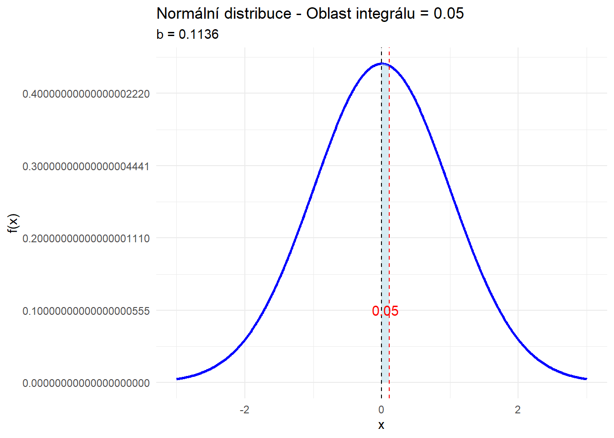
# 2. Výpočet hodnot pro interpolaci a aproximaci
x_points <- seq(0.05, 0.25, by = 0.05) # 0.05, 0.10, 0.15, 0.20, 0.25
y_points <- sapply(x_points, f)
# Vytvoření tabulky hodnot
data_table <- data.frame(
x = x_points,
y = y_points,
integral_0_to_x = sapply(x_points, function(xi) find_b_for_integral(f, xi))
)
cat("\nTabulka hodnot pro interpolaci:\n")
Tabulka hodnot pro interpolaci:print(data_table) x y integral_0_to_x
1 0.050000000000000002776 0.44046185015760974668 0.11361940205097198486
2 0.100000000000000005551 0.43881321134928247263 0.22872966527938842773
3 0.150000000000000022204 0.43607918152139252266 0.34696376323699951172
4 0.200000000000000011102 0.43228013375574025901 0.47027568519115447998
5 0.250000000000000000000 0.42744423518396462702 0.60121379792690277100# 3. Lineární interpolace
x_fine <- seq(0.05, 0.25, by = 0.001)
lagrange_values <- sapply(x_fine, function(t) Lagrange(t, x_points, y_points))
cat("Ověření interpolace v původních bodech:\n")Ověření interpolace v původních bodech:for(i in 1:length(x_points)) {
calculated <- Lagrange(x_points[i], x_points, y_points)
cat(sprintf("x=%.2f: očekáváno=%.6f, vypočteno=%.6f, chyba=%.2e\n",
x_points[i], y_points[i], calculated, abs(y_points[i] - calculated)))
}x=0.05: očekáváno=0.440462, vypočteno=0.440462, chyba=0.00e+00
x=0.10: očekáváno=0.438813, vypočteno=0.438813, chyba=0.00e+00
x=0.15: očekáváno=0.436079, vypočteno=0.436079, chyba=0.00e+00
x=0.20: očekáváno=0.432280, vypočteno=0.432280, chyba=0.00e+00
x=0.25: očekáváno=0.427444, vypočteno=0.427444, chyba=0.00e+00# 4. Polynomiální aproximace (3. stupně)
x_fine <- seq(0.05, 0.25, by = 0.001)
degree_4 <- LSA(x_points, y_points, 5) # polynom 4. stupně (5 koeficienty)
cat("Stupeň 4:", paste(round(degree_4, 6), collapse = ", "), "\n")Stupeň 4: 0.441013, 1.1e-05, -0.220681, 0.001184, 0.05196 poly_4_values <- sapply(x_fine, function(x) Horner(x, degree_4))
# Pro porovnání - vestavěná funkce R
poly_fit <- lm(y_points ~ poly(x_points, 3, raw = TRUE))
poly_pred <- predict(poly_fit, data.frame(x_points = x_fine))
plot2 <- ggplot() +
# Původní funkce
geom_line(aes(x = x_fine, y = sapply(x_fine, f)), color = "black", size = 1, alpha = 0.7) +
# Interpolace a aproximace
geom_line(aes(x = x_fine, y = lagrange_values), color = "red", size = 1) +
geom_line(aes(x = x_fine, y = poly_4_values), color = "blue", size = 2) +
# Body pro interpolaci
geom_point(aes(x = x_points, y = y_points), color = "purple", size = 3) +
labs(title = "Porovnání interpolačních a aproximačních metod", x = "x", y = "f(x)") +
theme_minimal() +
scale_color_manual(name = "Metoda", values = c("Původní funkce" = "black", "Lagrangeova interpolace" = "red", "Polynomiální aproximace" = "blue", "Kubická spline" = "green")) +
theme(legend.position = "bottom")
print(plot2)Warning: No shared levels found between `names(values)` of the manual scale and the
data's colour values.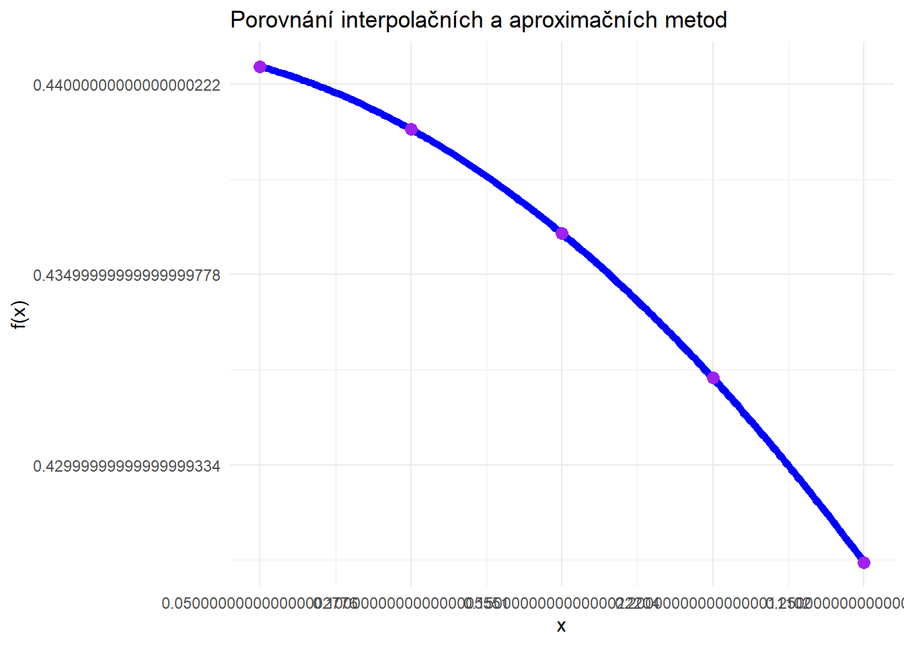